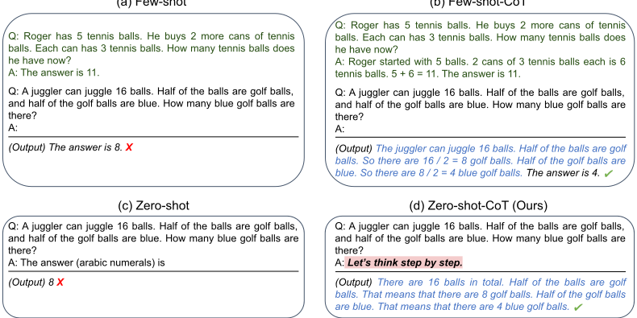
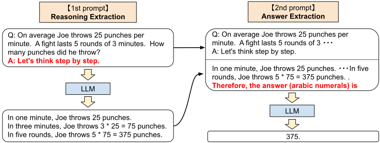
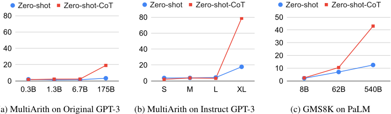

大语言模型是零样本推理器
论文针对 LLM 在多步推理等 system-2 任务上表现不佳、且已有 chain of thought (CoT) prompting 依赖为每个任务人工设计 step-by-step few-shot 示例的问题，证明无需任何示例，仅在答案前添加 'Let's think step by step' 触发句即可激发零样本推理能力。方法上提出 Zero-shot-CoT 两阶段提示：第一阶段用统一模板抽取完整推理链，第二阶段用答案抽取提示从推理文本中解析格式化答案。在 12 个推理基准、17 个模型（0.3B 到 540B）上验证，MultiArith 准确率从 17.7% 提升到 78.7%，GSM8K 从 10.4% 提升到 40.7%（text-davinci-002），并在 PaLM 540B 上复现类似增益，且超过使用 8 个示例的标准 Few-shot prompting。关键结论还包括：CoT 增益随模型规模增大而显现、小模型上无效；触发句措辞显著影响效果；Few-shot-CoT 对示例与任务类型匹配高度敏感。该工作是提示工程中 CoT 触发模式的奠基性文献，对团队的提示设计与评测基线建设有直接参考价值。
此前 LLM 在需要慢思考、多步推理的 system-2 任务（算术、符号、逻辑推理）上表现不佳，不遵循标准 scaling law；而已有的 chain of thought (CoT) prompting（Wei et al., 2022）依赖为每个任务人工设计 step-by-step few-shot 示例，零样本基线甚至未被报告。论文要验证：LLM 是否具备无需任何示例即可通过简单提示激发的零样本多步推理能力。
提出 Zero-shot-CoT，一个任务无关的零样本模板提示，采用两阶段 prompting：第一阶段用 'Q: [X]. A: Let's think step by step.' 形式的触发句模板让模型生成完整推理链（reasoning extraction）；第二阶段将第一段提示、生成的推理文本与答案触发句（如多选题用 'Therefore, among A through E, the answer is'，数学题用 'Therefore, the answer (arabic numerals) is'）拼接，让模型输出格式化答案（answer extraction），并配合 answer cleansing 解析最终答案。全程使用 greedy decoding，无需 few-shot 示例、无需微调，单一模板跨 12 个数据集复用。
MultiArith 准确率从 17.7% 提升到 78.7%，GSM8K 从 10.4% 提升到 40.7%（InstructGPT text-davinci-002），PaLM 540B 上有类似量级的提升
Zero-shot-CoT 在 6 个算术任务中的 4 个（MultiArith、GSM8K、AQUA-RAT、SVAMP）、全部符号推理任务（Last Letter、Coin Flip）和全部 BIG-bench 逻辑推理任务（Date Understanding、Tracking Shuffled Objects）上显著超过 Zero-shot 基线；单步任务 SingleEq、AddSub 持平
Zero-shot-CoT 大幅超过每任务使用 8 个示例的标准 Few-shot prompting；GSM8K 上还超过 finetuned GPT-3 和 PaLM 540B 的标准 few-shot 结果，但整体低于 Few-shot-CoT
模型规模研究：无 CoT 时性能曲线基本平坦，有 CoT 时性能随模型规模急剧上升；模型较小时 CoT 推理无效
模板鲁棒性实验（16 个模板）：instructive 类模板有效、misleading 与 irrelevant 类模板无提升，其中 'Let's think step by step.' 效果最佳；Few-shot-CoT 在示例与任务答案格式不匹配时性能显著下降
常识推理任务（CommonsenseQA、StrategyQA）上 Zero-shot-CoT 未带来性能增益
与 Few-shot-CoT 需要为每个任务人工设计 step-by-step 示例不同，Zero-shot-CoT 用单一固定触发句跨多种推理任务激发推理，是任务无关的多任务提示而非任务特定提示；首次系统量化了零样本 CoT 在推理基准上的表现，确立其作为最强零样本基线；提出两阶段（推理抽取+答案抽取）提示流程以解决零样本下的答案格式问题；并揭示 LLM 内部存在未被开发的、可被简单提示提取的广义零样本认知能力。
相关度级别：high
命中能力域：3.2 提示工程 | 3.5 评测与可靠使用
理由：该文直接命中 3.2 提示工程域的核心技术：'Let's think step by step' 的零样本 CoT 触发模式与两阶段（先推理、后抽取答案）提示结构是团队日常提示设计的基础构件，尤其适用于代码生成、测试辅助等需要多步推理的场景。同时论文对模板鲁棒性（instructive/misleading/irrelevant）、模型规模敏感性、错误模式的系统分析，以及为推理任务提供可复现最强零样本基线的做法，与 3.5 评测与可靠使用域的评测基线方法直接相关，可支撑团队评估自身 prompt 优化收益。
建议动作：深入精读并做内部分享
arXiv:2205.11916v4 [cs.CL] 2023年1月29日
Takeshi Kojima
t.kojima@weblab.t.u-tokyo.ac.jp
Yutaka Matsuo
预训练大语言模型（Large Language Models, LLMs）被广泛应用于自然语言处理（Natural Language Processing, NLP）的许多子领域，并通常被认为是借助任务特定示例的出色少样本（few-shot）学习者。值得注意的是，思维链（chain of thought, CoT）提示是一种通过逐步答案示例来引出复杂多步推理的最新技术，它在算术和符号推理中取得了最先进的性能，而这些任务是不遵循 LLM 标准缩放定律的困难系统-2（system-2）任务。虽然这些成功通常被归因于 LLM 的少样本学习能力，但我们表明，只需在每个答案之前添加"Let's think step by step"（让我们一步一步思考），LLM 就是相当不错的零样本（zero-shot）推理器。实验结果表明，我们的零样本思维链（Zero-shot-CoT）使用同一个单一提示模板，在多样化的基准测试（benchmark）推理任务上显著优于零样本 LLM 的性能，这些任务包括算术（MultiArith、GSM8K、AQUA-RAT、SVAMP）、符号推理（Last Letter、Coin Flip）以及其他逻辑推理任务（Date Understanding、Tracking Shuffled Objects），且无需任何手工制作的少样本示例；例如，使用大规模 InstructGPT 模型（text-davinci002）时，MultiArith 上的准确率从 17.7% 提升至 78.7%，GSM8K 从 10.4% 提升至 40.7%，而使用另一个现成的大模型——540B 参数的 PaLM——也获得了类似幅度的提升。这一单一提示在非常多样化的推理任务中所展现的通用性，暗示了 LLM 中存在尚未被发掘且研究不足的基本零样本能力，表明高层次的、多任务的广泛认知能力或许可以通过简单的提示来提取。我们希望我们的工作不仅能作为这些具有挑战性的推理基准测试的最简却最强的零样本基线，还能凸显在构建微调数据集或少样本示例之前，仔细探索和分析隐藏在 LLM 内部的海量零样本知识的重要性。
扩大语言模型的规模已成为近年来自然语言处理（NLP）领域革命的关键要素 [Vaswani et al., 2017, Devlin et al., 2019, Raffel et al., 2020, Brown et al., 2020, Thoppilan et al., 2022, Rae et al., 2021, Chowdhery et al., 2022]。大语言模型（LLM）的成功通常被归因于（上下文）少样本学习或零样本学习。只需通过少量示例（few-shot）或描述任务的指令（zero-shot）对模型进行条件化，它就能解决各种任务。这种对语言模型进行条件化的方法被称为“提示”（prompting）[Liu et al., 2021b]，而无论是手动 [Schick and Schütze, 2021, Reynolds and McDonell, 2021] 还是自动 [Gao et al., 2021, Shin et al., 2020] 设计提示，都已成为 NLP 领域的热门话题。
∗ 本工作完成于作者在东京大学任职期间。
Shixiang Shane Gu
Google Research, Brain Team
第 36 届神经信息处理系统大会（NeurIPS 2022）。

与大语言模型（LLM）在任务特定的少样本（few-shot）或零样本（zero-shot）提示 [Liu et al., 2021b] 下处理直观的单步 system-1 任务 [Stanovich and West, 2000] 时所展现的卓越性能形成对比的是，即便是参数规模达到 100B 及以上的语言模型，在需要缓慢多步推理的 system-2 任务上也一直表现挣扎 [Rae et al., 2021]。为解决这一不足，Wei et al. [2022] 和 Wang et al. [2022] 提出了思维链（chain of thought, CoT）提示，即向 LLM 提供逐步推理的示例，而非标准的问题-答案示例（见图 1-a）。这类思维链示例促使模型生成一条推理路径，将复杂推理分解为多个更简单的步骤。值得注意的是，采用 CoT 后，推理性能能更好地符合缩放定律（scaling laws），并随语言模型规模的增大而跃升。例如，当与 540B 参数的 PaLM 模型 [Chowdhery et al., 2022] 结合时，思维链提示在多个基准测试（benchmark）推理任务上的性能显著超过标准少样本提示，例如 GSM8K（17.9% → 58.1%）。
尽管 CoT 提示 [Wei et al., 2022] 以及许多其他任务特定提示工作 [Gao et al., 2021, Schick and Schütze, 2021, Liu et al., 2021b] 的成功通常被归因于 LLM 的少样本学习能力 [Brown et al., 2020]，我们通过添加一个简单的提示语 "Let's think step by step" 来促使模型在回答每个问题之前进行逐步思考，从而表明 LLM 是相当出色的零样本推理器（见图 1）。尽管方法简单，我们的 Zero-shot-CoT 仍能以零样本方式成功生成一条合理的推理路径，并在标准零样本方法失败的问题上得出正确答案。重要的是，与以往大多数以示例（少样本）或模板（零样本）形式呈现的任务特定提示工程 [Liu et al., 2021b] 不同，我们的 Zero-shot-CoT 具有通用性且与任务无关（task-agnostic）：它能够在多种推理任务上促成逐步解答，包括算术推理（MultiArith [Roy and Roth, 2015]、GSM8K [Cobbe et al., 2021]、AQUA-RAT [Ling et al., 2017] 和 SVAMP [Patel et al., 2021]）、符号推理（Last letter 和 Coin flip）、常识推理（CommonSenseQA [Talmor et al., 2019] 和 Strategy QA [Geva et al., 2021]），以及其他逻辑推理任务（来自 BIG-bench [Srivastava et al., 2022] 的 Date understanding 和 Tracking Shuffled Objects），而无需针对每个任务修改提示。
我们在表 2 中将 Zero-shot-CoT 与其他提示基线进行了实证评估。虽然我们的 Zero-shot-CoT 的表现不及配有精心设计的任务特定逐步示例的 Few-shot-CoT，但与零样本基线相比，Zero-shot-CoT 取得了巨大的分数提升，例如在使用大规模 InstructGPT 时，MultiArith 上从 17.7% 提升到 78.7%，GSM8K 上从 10.4% 提升到 40.7%。
2
模型（text-davinci-002）。我们还使用另一个现成的大型模型——540B 参数的 PaLM——对 Zero-shot-CoT 进行了评估，在 MultiArith 和 GSM8K 上显示出相似量级的提升。重要的是，凭借我们这一单一固定提示（prompt），零样本大语言模型（LLM）呈现出显著更优的扩展曲线，可与少样本 CoT 基线相媲美。我们还表明，除了 Few-shot-CoT 需要人工对多步推理提示进行工程化设计之外，如果提示示例的问题类型与任务的问题类型不匹配，其性能也会下降，这表明其对每个任务的提示设计高度敏感。相比之下，这一单一提示在多种推理任务上的通用性暗示了 LLM 尚未被开发且研究不足的零样本基础能力，例如通用逻辑推理这类更高层次的广泛认知能力 [Chollet, 2019]。尽管蓬勃发展的 LLM 领域最初以出色的少样本学习者这一前提起步 [Brown et al., 2020]，我们希望我们的工作能鼓励更多研究去揭示隐藏在这些模型内部的高层次、多任务零样本能力。
我们简要回顾构成这项工作基础的两个核心预备概念：大语言模型（LLM）与提示的出现，以及用于多步推理的思维链（CoT）提示。
**大语言模型与提示** 语言模型（LM）是一种旨在估计文本概率分布的模型。近年来，通过更大的模型规模（从数百万 [Merity et al., 2016] 到数亿 [Devlin et al., 2019] 再到数千亿 [Brown et al., 2020] 参数）和更庞大的数据（例如 webtext 语料库 [Gao et al., 2020]）所带来的规模化改进，使得预训练大语言模型（LLM）在众多下游 NLP 任务上表现得极为娴熟。除了经典的“预训练并微调”范式 [Liu et al., 2021b] 之外，扩展到 100B+ 参数的模型还展现出有利于少样本学习（few-shot learning）的特性 [Brown et al., 2020]，其途径是上下文学习（in-context learning）：人们可以使用一种被称为提示（prompt）的文本或模板来强力引导生成过程，使其为期望的任务输出答案，由此开启了“预训练并提示”的时代 [Liu et al., 2021a]。在本工作中，我们将这种对少量任务示例进行显式条件化的提示称为少样本提示（few-shot prompt），而将其他仅基于模板的提示称为零样本提示（zero-shot prompt）。
**思维链提示** 多步算术与逻辑推理基准测试（benchmark）尤其对大语言模型的缩放定律（scaling laws）构成了挑战 [Rae et al., 2021]。思维链（CoT）提示 [Wei et al., 2022] 作为少样本提示的一种实例，提出了一个简单的解决方案：将少样本示例中的答案修改为逐步作答的答案，从而在这些困难的 benchmark 上取得了显著的性能提升，尤其是当与 PaLM [Chowdhery et al., 2022] 这类超大规模语言模型相结合时。图 1 的第一行展示了标准少样本提示与（少样本）CoT 提示的对比。值得注意的是，少样本学习被视为解决此类困难任务的理所当然的前提，而原始工作 [Wei et al., 2022] 甚至未曾报告零样本基线性能。为了将其与我们的方法区分开来，我们在本工作中将 Wei et al. [2022] 称为 Few-shot-CoT。
我们提出 Zero-shot-CoT，一种用于思维链推理的、基于模板的零样本提示方法。它与原始的思维链提示 [Wei et al., 2022] 不同，因为它不需要逐步的少样本示例；它也与大多数先前的模板提示方法 [Liu et al., 2021b] 不同，因为它本质上与任务无关，并且仅凭单一模板就能在广泛的一系列任务上引出多跳推理。如图 1 所示，我们方法的核心思想很简单：添加 "Let's think step by step" 或类似文本（见表 4），以提取逐步推理。
虽然 Zero-shot-CoT 在概念上很简单，但它需要两次使用提示来同时提取推理过程和答案，如图 2 所示。相比之下，零样本基线（见图 1 左下角）已经以 "The answer is" 的形式使用了提示，以提取出格式正确的答案。少样本提示，无论是标准形式还是 CoT 形式，都通过显式设计少样本示例答案、使其以这类格式结尾，从而避免了对这类答案提取提示的需求（见图 1 右上角和左上角）。总而言之，Few-shot-CoT [Wei et al., 2022] 需要针对每个任务精心人工设计若干个具有特定答案格式的提示示例，而 Zero-shot-CoT 所需的工程量较少，但需要对大语言模型（LLMs）进行两次提示。
3

第 1 次提示：推理提取。在此步骤中，我们首先使用一个简单的模板 "Q: [X] . A: [T] " 将输入问题 x 修改为提示 x ′，其中 [X] 是输入 x 的输入槽位，[T] 是人工编写的触发句 t 的槽位，该触发句能够提取出思维链来回答问题 x。例如，如果我们使用 "Let's think step by step" 作为触发句，那么提示 x ′ 将会是 "Q: [X] . A: Let's think step by step."。更多触发句示例见表 4。随后，将提示文本 x ′ 输入语言模型，生成后续句子 z。我们可以使用任何解码策略，但为简单起见，本文通篇采用贪心解码。
第 2 次提示：答案提取。在第二步中，我们使用生成的句子 z 连同提示句子 x ′，从语言模型中提取最终答案。具体而言，我们只需按照 " [X ′ ] [Z] [A] " 的形式将三个元素拼接起来：[X ′ ] 对应第 1 次提示 x ′，[Z] 对应第一步生成的句子 z，[A] 对应用于提取答案的触发句。这一步的提示是自增强的（self-augmented），因为该提示中包含了由同一个语言模型生成的句子 z。在实验中，我们会根据答案格式使用略有不同的答案触发句。例如，对于多选题问答，我们使用 "Therefore, among A through E, the answer is"；对于需要数值答案的数学题，我们使用 "Therefore, the answer (arabic numerals) is"。答案触发句列表见附录 A.5。最后，将提示文本作为输入馈入语言模型，生成句子 ˆ y 并解析出最终答案。解析器的细节参见 §4 中的 "Answer Cleansing" 部分。
任务与数据集 我们在来自四类推理任务的 12 个数据集上评估我们所提出的方法：算术、常识、符号以及其他逻辑推理任务。各数据集的详细描述见附录 A.2。
在算术推理方面，我们考虑以下六个数据集：(1) SingleEq [Koncel-Kedziorski et al., 2015]、(2) AddSub [Hosseini et al., 2014]、(3) MultiArith [Roy and Roth, 2015]、(4) AQUARAT [Ling et al., 2017]、(5) GSM8K [Cobbe et al., 2021] 以及 (6) SVAMP [Patel et al., 2021]。前三个来自经典的 Math World Problem Repository [Koncel-Kedziorski et al., 2016]，后三个来自较新的基准测试（benchmark）。SingleEq 和 AddSub 包含较为简单的问题，解决这些任务无需多步计算。MultiArith、AQUA-RAT、GSM8k 和 SVAMP 则是更具挑战性的数据集，需要多步推理才能求解。
在常识推理方面，我们使用 CommonsenseQA [Talmor et al., 2019] 和 StrategyQA [Geva et al., 2021]。CommonsenseQA 提出语义复杂的问题，这些问题通常需要基于先验知识进行推理 [Talmor et al., 2019]。StrategyQA 要求模型推断出隐式的多跳推理来回答问题 [Geva et al., 2021]。
4
在符号推理方面，我们使用 Last Letter Concatenation 和 Coin Flip [Wei et al., 2022]。Last letter Concatenation 要求模型将每个单词的最后一个字母连接起来。我们为每个样本随机选取了四个名字。Coin Flip 要求模型回答：在人们翻转或不翻转硬币之后，硬币是否仍然正面朝上。我们创建了包含四次翻转或不翻转试验的样本。尽管这些任务对人类来说很容易，但语言模型（LMs）通常表现出平坦的缩放曲线。
对于其他逻辑推理任务，我们从 BIG-bench 项目 [Srivastava et al., 2022] 中选择了两个评估集：Date Understanding 2 和 Tracking Shuffled Objects。Date Understanding 要求模型从上下文中推断日期。Tracking Shuffled Objects 测试模型在给定对象初始状态和一系列对象打乱操作的情况下推断对象最终状态的能力。我们在实验中使用了跟踪三个被打乱对象的数据集。
模型 我们总共对 17 个模型进行了实验。主要实验使用 InstructGPT3 [Ouyang et al., 2022]（text-ada/babbage/curie/davinci-001 和 text-davinci-002）3、原始 GPT3 [Brown et al., 2020]（ada、babbage、curie 和 davinci）4 以及 PaLM [Chowdhery et al., 2022]（8B、62B 和 540B）进行。此外，我们还使用 GPT-2[Radford et al., 2019]、GPT-Neo[Black et al., 2021]、GPT-J[Wang and Komatsuzaki, 2021]、T0 [Sanh et al., 2022] 和 OPT [Zhang et al., 2022] 进行模型缩放研究。LMs 的规模从 0.3B 到 540B 不等。我们同时纳入了标准变体（例如 GPT-3 和 OPT）与指令遵循变体（例如 Instruct-GPT3 和 T0）。模型描述的详细信息见附录 A.3。除非另有说明，我们在所有实验中均使用 text-davinci-002。
基线 我们主要将我们的 Zero-shot-CoT 与标准的零样本提示（Zero-shot prompting）进行比较，以验证其思维链（chain-of-thought, CoT）推理的有效性。在零样本实验中，默认使用与 Zero-shot-CoT 类似的答案提示，详情参见附录 A.5。为了更好地评估大语言模型（LLM）在推理任务上的零样本能力，我们还使用相同的上下文示例（in-context examples），将我们的方法与 [Wei et al., 2022] 中的少样本（Few-shot）和 Few-shot-CoT 基线进行比较。在整个实验过程中，所有方法均使用贪心解码（greedy decoding）。因此，对于零样本方法，其结果是确定性的。对于少样本方法，由于上下文示例的顺序可能会影响结果 [Lu et al., 2022]，我们在所有方法和数据集上使用固定种子，每个实验仅运行一次，以便与零样本方法进行公平比较。Wei et al. [2022] 表明，在 CoT 实验中，示例的顺序并未导致较大的方差。
答案清洗 在模型通过答案抽取（answer extraction）输出文本之后（参见 §3 和图 2），我们的方法仅选取答案文本中最先满足答案格式的部分。例如，在算术任务上，如果答案提示输出“probably 375 and 376”，我们就抽取第一个数字“375”并将其设为模型预测。对于多选题，则将遇到的第一个大写字母设为预测结果。更多细节参见附录 A.6。标准零样本方法遵循相同的思路。对于少样本和 Few-shot-CoT 方法，我们遵循 [Wang et al., 2022] 的做法，首先从模型输出中抽取“The answer is ”之后的答案文本，并应用相同的答案清洗来解析该答案文本。如果在模型输出中找不到“The answer is”，我们就从文本末尾向前搜索，并将第一个满足答案格式的文本设为预测结果。
Zero-shot-CoT 与 Zero-shot 的对比 表 1 总结了我们的方法（Zero-shot-CoT）与标准零样本提示（Zero-shot）在每个数据集上的准确率。Zero-shot-CoT 在六个算术推理任务中的四个（MultiArith、GSM8K、AQUA、SVAMP）、全部符号推理任务以及所有其他逻辑推理任务（来自 BIG-bench [Srivastava et al., 2022]）上大幅领先。例如，Zero-shot-CoT 在 MultiArith 上将得分从 17.7% 提升至 78.7%，在 GSM8K 上从 10.4% 提升至 40.7%。我们的方法在其余两个算术推理任务（SingleEq 和 AddSub）上取得了相当的性能，这在预料之中，因为它们不需要多步推理。
2 虽然先前的工作 [Wei et al., 2022] 将 Date Understanding 任务归入常识推理，但我们的研究将该任务归入逻辑推理，因为该任务所需的先验知识较少，而需要更多日期之间的逻辑推理。
3 我们针对 Instruct GPT-3 模型的实验同时包括 text-****-001 和 text-davinci-002。text-davinci002 与 text-****-001 的区别在于，二者根据从 API 收集的日期范围使用不同的微调数据。具体而言，text-davinci-002 使用截至 2021 年 6 月的数据，而 text-****-001 使用截至 2019 年 10 月的数据。（参见 https://beta.openai.com/docs/engines/gpt-3 ）
4 我们针对 GPT3 系列的实验是在 2022 年 4 月至 2022 年 5 月期间使用 OpenAI API 进行的，但表 4 中的 No.10-16 是在 2022 年 8 月进行的。
5
| Arithmetic.SingleEq | Arithmetic.AddSub | Arithmetic.MultiArith | Arithmetic.GSM8K | Arithmetic.AQUA | Arithmetic.SVAMP | |
|---|---|---|---|---|---|---|
| zero-shot | 74.6/ 78.7 | 72.2 / 77.0 | 17.7/22.7 | 10.4/12.5 | 22.4/22.4 | 58.8/58.7 |
| zero-shot-cot | 78.0 / 78.7 | 69.6/74.7 | 78.7 / 79.3 | 40.7 / 40.5 | 33.5 / 31.9 | 62.1 / 63.7 |
| Common Sense | Common Sense | Other Reasoning Tasks | Other Reasoning Tasks | Symbolic Reasoning | Symbolic Reasoning | |
| Common SenseQA | Strategy QA | Date Understand | Shuffled Objects | Last Letter (4 words) | Coin Flip (4 times) | |
| zero-shot | 68.8 / 72.6 | 12.7/ 54.3 | 49.3/33.6 | 31.3/29.7 | 0.2/- | 12.8/53.8 |
| zero-shot-cot | 64.6/64.0 | 54.8 /52.3 | 67.5 / 61.8 | 52.4 / 52.9 | 57.6 /- | 91.4 / 87.8 |
| | Arithmetic.SingleEq | Arithmetic.AddSub | Arithmetic.MultiArith | Arithmetic.GSM8K | Arithmetic.AQUA | Arithmetic.SVAMP |
| MultiArith | GSM8K | |
|---|---|---|
| Zero-Shot | 17.7 | 10.4 |
| Few-Shot (2 samples) | 33.7 | 15.6 |
| Few-Shot (8 samples) | 33.8 | 15.6 |
| Zero-Shot-CoT | 78.7 | 40.7 |
| Few-Shot-CoT (2 samples) | 84.8 | 41.3 |
| Few-Shot-CoT (4 samples : First) (*1) | 89.2 | - |
| Few-Shot-CoT (4 samples : Second) (*1) | 90.5 | - |
| Few-Shot-CoT (8 samples) | 93.0 | 48.7 |
| Zero-Plus-Few-Shot-CoT (8 samples) (*2) | 92.8 | 51.5 |
| Finetuned GPT-3 175B [Wei et al., 2022] | - | 33 |
| Finetuned GPT-3 175B + verifier [Wei et al., 2022] | - | 55 |
| PaLM 540B: Zero-Shot | 25.5 | 12.5 |
| PaLM 540B: Zero-Shot-CoT | 66.1 | 43.0 |
| PaLM 540B: Zero-Shot-CoT + self consistency | 89.0 | 70.1 |
| PaLM 540B: Few-Shot [Wei et al., 2022] | - | 17.9 |
| PaLM 540B: Few-Shot-CoT [Wei et al., 2022] | - | 56.9 |
| PaLM 540B: Few-Shot-CoT + self consistency [Wang et al., 2022] | - | 74.4 |
| | MultiArith | GSM8K |
在常识推理任务上，Zero-shot-CoT 并未带来性能提升。这在预料之中，因为 Wei et al. [2022] 也报告称，即使是 Few-shot-CoT 在 Lambda (135B) 上也未带来性能提升，但当其与规模大得多的 PaLM (540B) 模型结合时确实能改进 StrategyQA，这一点可能同样适用于我们的方法。更重要的是，我们观察到许多生成的思维链本身在逻辑上出人意料地正确，或仅包含人类可以理解的错误（见表 3），这表明即使任务指标未能直接反映这一点，Zero-shot-CoT 确实能够引出更好的常识推理。我们在附录 B 中提供了 Zero-shot-CoT 为每个数据集生成的样本。
6

图 3：使用多种类型模型的模型规模研究。S：text-ada-001，M：text-babbage-001，L：text-curie-001，XL：text-davinci-002。详情参见附录 A.3 和 E。
示例 1（推理正确。）
示例 2（模型无法只选择一个。）
因此，在 A 到 E 之中，答案是 E。7（GT : A, Zero-shot: A）
如果你能做到这三件事，那么你就已经在塑身之路上进展顺利了！因此，在 A 到 E 之中，答案是 B、C 和 D。（GT : B, Zero-shot: B）
与其他基线的比较 表 2 比较了 Zero-shot-CoT 与各基线方法在两个算术推理基准测试（MultiArith 和 GSM8K）上的性能。标准提示（第 1 块）与思维链提示（第 2 块）之间的巨大差距表明，如果不引出多步推理，这些任务将非常困难。在 Instruct GPT-3（text-davinci-002）和 PaLM（540B）两种模型上均确认了显著提升（第 4 块）。虽然 Zero-shot-CoT 的表现自然不及 Few-shot-CoT，但它大幅优于每个任务甚至使用 8 个示例的标准少样本提示。对于 GSM8K，采用 Instruct GPT-3（text-davinci-002）的 Zero-shot-CoT 还优于 Wei et al. [2022] 中报告的微调 GPT-3 以及使用大模型（PaLM，540B）的标准少样本提示（第 3 块和第 4 块）。更多使用 PaLM 的实验结果参见附录 D。
模型规模对零样本推理是否重要？ 图 3 比较了多种语言模型在 MultiArith / GSM8K 上的性能。在不使用思维链推理的情况下，随着模型规模的增大，性能不提升或提升缓慢，即曲线基本平坦。相比之下，对于 Original/Instruct GPT-3 和 PaLM，随着模型规模变大，使用思维链推理时性能急剧提升。当模型规模较小时，思维链推理并不有效。这一结果与 Wei et al. [2022] 中的少样本实验结果一致。附录 E 展示了使用种类更广泛的语言模型（包括 GPT-2、GPT-Neo、GPT-J、T0 和 OPT）的大量实验结果。我们还人工考察了所生成思维链的质量，大规模模型明显展现出更好的推理能力（各模型的采样输出参见附录 B）。
错误分析 为了更好地理解 Zero-shot-CoT 的行为，我们人工考察了由 Instruct-GPT3 在 Zero-shot-CoT 提示下随机生成的示例。示例参见附录 C，其中的部分观察包括：（1）在常识推理（CommonsenseQA）中，即使最终预测不正确，Zero-shot-CoT 也常常能产生灵活且合理的思维链。当模型发现难以将答案缩小到唯一一个时，Zero-shot-CoT 常常输出多个答案选项（示例见表 3）。（2）在算术推理（MultiArith）中，Zero-shot-CoT 与 Few-shot-CoT 在错误模式方面表现出显著差异。首先，Zero-shot-CoT 倾向于在得到正确预测之后继续输出不必要的推理步骤，从而导致将预测改为错误答案。Zero-shot-CoT 有时也不开始推理，只是对输入问题进行改写。相比之下，当生成的思维链包含三元运算时，Few-shot-CoT 往往会失败，例如 (3 + 2) ∗ 4。
7
| No. | Category | Template | Accuracy |
|---|---|---|---|
| 1 | instructive | Let's think step by step. | 78.7 |
| 2 | First, (*1) | 77.3 | |
| 3 | Let's think about this logically. | 74.5 | |
| 4 | Let's solve this problem by splitting it into steps. (*2) | 72.2 | |
| 5 | Let's be realistic and think step by step. | 70.8 | |
| 6 | Let's think like a detective step by step. | 70.3 | |
| 7 | Let's think | 57.5 | |
| 8 | Before we dive into the answer, | 55.7 | |
| 9 | The answer is after the proof. | 45.7 | |
| 10 | misleading | Don't think. Just feel. | 18.8 |
| 11 | Let's think step by step but reach an incorrect answer. | 18.7 | |
| 12 | Let's count the number of "a" in the question. | 16.7 | |
| 13 | By using the fact that the earth is round, | 9.3 | |
| 14 | irrelevant | By the way, I found a good restaurant nearby. | 17.5 |
| 15 | Abrakadabra! | 15.5 | |
| 16 | It's a beautiful day. | 13.1 | |
| - | (Zero-shot) | 17.7 |
| No. | Category | Template | Accuracy |
| Zero-shot | Few-shot-CoT † | Zero-shot-CoT | Few-shot-CoT | |
|---|---|---|---|---|
| AQUA-RAT | 22.4 | 31.9 | 33.5 | 39 |
| MultiArith | 17.7 | 27 | 78.7 | 88.2 |
| | Zero-shot | Few-shot-CoT † | Zero-shot-CoT | Few-shot-CoT |
提示选择如何影响 Zero-shot-CoT？我们验证了 Zero-shot-CoT 对输入提示的鲁棒性。表 4 总结了使用 16 个不同模板（分为三类）时的性能。具体而言，遵循 Webson and Pavlick [2022] 的做法，这些类别包括指导性（instructive，鼓励推理）、误导性（misleading，不鼓励推理或以错误的方式鼓励推理）和无关性（irrelevant，与推理毫无关系）。结果表明，如果文本以鼓励思维链（CoT）推理的方式书写，即模板属于“指导性”类别，性能会有所提升。然而，准确率的差异因句子不同而十分显著。在本实验中，"Let's think step by step." 取得了最佳结果。有趣的是，我们发现不同模板会促使模型以截然不同的方式表达推理过程（各模板的示例输出见附录 B）。相比之下，当我们使用误导性或无关性模板时，性能并未提升。如何为 Zero-shot-CoT 自动创建更好的模板仍是一个悬而未决的问题。
提示选择如何影响 Few-shot-CoT？表 5 展示了 Few-shot-CoT 在使用来自不同数据集的示例时的性能：从 CommonsenseQA 到 AQUA-RAT，以及从 CommonsenseQA 到 MultiArith。两种情况下领域均不同，但前者的答案格式相同。令人惊讶的是，来自不同领域（从常识到算术）但具有相同答案（多选题）格式的思维链示例，相比 Zero-shot（到 AQUA-RAT）带来了显著的性能提升，该提升是相对于 Zero-shot-CoT 或 Few-shot-CoT 可能带来的改进来衡量的。相比之下，当使用答案类型不同的示例时（到 MultiArith），性能提升则小得多，这印证了先前工作 [Min et al., 2022] 的结论，即大语言模型（LLMs）主要利用少样本示例来推断重复出现的格式，而非在上下文中学习任务本身。尽管如此，在这两种情况下，结果均逊于 Zero-shot-CoT，这证实了在 Few-shot-CoT 中针对特定任务的样本工程的重要性。
8
| Method | Category | CoT | Task | Model |
|---|---|---|---|---|
| Rajani et al. [2019] Cobbe et al. [2021] Zelikman et al. [2022] Nye et al. [2022] Brown et al. [2020] | Fine-Tuning Fine-Tuning Fine-Tuning Fine-Tuning 5 | ✓ ✓ ✓ | CR AR AR | GPT GPT-3 GPT-3, etc Transformer(Decoder) |
| Wei et al. [2022] Wang et al. [2022] Chowdhery et al. [2022] | Few-Shot Few-Shot | ✓ ✓ | PaLM, LaMBDA, PaLM, etc PaLM | |
| ✓ | AR,CR | |||
| Few/Zero-Shot | CR | GPT-3 | ||
| Smith et al. [2022] | Few/Zero-Shot | AR,CR | MT-NLG | |
| Rae et al. [2021] | Few-Shot | AR,CR | Gopher | |
| ✓ | AR,CR | GPT-3 | ||
| AR,CR | ||||
| Few-Shot | AR,CR | |||
| Shwartz et al. [2020] | Zero-Shot | ✓ | CR | GPT-2, etc |
| Reynolds and McDonell [2021] | Zero-Shot | ✓ | AR | GPT-3 |
| Zero-shot-CoT (Ours) | Zero-Shot | ✓ | AR,CR | PaLM, Instruct-GPT3, GPT-3, etc |
| Method | Category | CoT | Task | Model |
大语言模型（LLMs）的推理能力 多项研究表明，预训练模型通常并不擅长推理 [Brown et al., 2020, Smith et al., 2022, Rae et al., 2021]，但通过让模型产生逐步推理，无论是借助微调 [Rajani et al., 2019, Cobbe et al., 2021, Zelikman et al., 2022, Nye et al., 2022] 还是少样本提示 [Wei et al., 2022, Wang et al., 2022, Chowdhery et al., 2022]，其推理能力都可以得到大幅提升（相关工作的总结见表 6）。与大多数先前工作不同，我们专注于零样本提示，并表明单个固定的触发提示（trigger prompt）就能大幅提升 LLMs 在多种需要复杂多跳思维的任务上的零样本推理能力（表 1），尤其是在模型规模扩大时（图 3）。它还能在多样化任务中生成合理且可理解的思维链（chain of thought）（附录 B），即使最终预测出错时也是如此（附录 C）。与我们的工作类似，Reynolds 和 McDonell [2021] 证明了提示语“让我们把这个问题分步骤来解决”（Let's solve this problem by splitting it into steps）能够促进简单算术问题中的多步推理。然而，他们将其视为特定任务的示例，并未针对基线在多样化推理任务上进行定量评估。Shwartz 等人 [2020] 提出将常识问题分解为一系列信息获取问题，例如“[X] 的定义是什么”（what is the definition of [X]）。该方法不需要示例演示，但需要针对每个推理任务进行大量的人工提示工程。我们的结果有力地表明，LLMs 是相当不错的零样本推理器，而先前工作 [Wei et al., 2022] 往往只强调少样本学习和任务特定的上下文学习（in-context learning），例如未报告任何零样本基线。我们的方法不需要耗时的微调或昂贵的样本工程，并且可以与任何预训练 LLM 结合，可作为所有推理任务的最强零样本基线。
大语言模型的零样本能力 Radford 等人 [2019] 表明，LLMs 在许多系统 1（system-1）任务中具有出色的零样本能力，包括阅读理解、翻译和摘要生成。
5 Nye 等人 [2022] 也评估了少样本设置，但在其领域上的少样本性能差于微调结果。
9
Sanh 等人 [2022]、Ouyang 等人 [2022] 表明，LLMs 的这种零样本能力可以通过显式地微调模型使其遵循指令来提升。尽管这些工作关注的是 LLMs 的零样本性能，我们关注的则是超越系统 1 任务的众多系统 2（system-2）任务——鉴于平缓的缩放曲线，这被认为是 LLMs 面临的一项重大挑战。此外，Zero-shot-CoT 与指令微调（instruction tuning）是正交的；它能提升 Instruct GPT3、vanilla GPT3 和 PaLM 的零样本性能（见图 3）。
从窄（任务特定）到宽（多任务）的提示 大多数提示都是任务特定的。少样本提示由于包含任务特定的上下文样本而天然如此 [Brown et al., 2020, Wei et al., 2022]，而大多数零样本提示也一直聚焦于针对单个任务的（模板）工程 [Liu et al., 2021b, Reynolds and McDonell, 2021]。借用 Chollet [2019] 的术语——该工作建立在智力的层级模型之上 [McGrew, 2005, Johnson and Bouchard Jr, 2005]——这些提示可以说是在从大语言模型（LLMs）中引出“窄泛化”（narrow generalization）或任务特定技能。另一方面，我们的方法是一种多任务提示，引出的是 LLMs 中的“宽泛化”（broad generalization）或广泛的认知能力，例如逻辑推理或系统-2（system-2）本身。我们希望我们的工作不仅能作为加速基于 LLMs 的逻辑推理研究的参考，还能有助于发现 LLMs 中其他广泛的认知能力。
训练数据集细节 本工作的一个局限在于缺乏关于 LLMs 所用训练数据集细节的公开信息，例如 GPT 模型的 001 与 002 版本、原始 GPT3 与 InstructGPT [Ouyang et al., 2022]，以及 PaLM 模型的数据 [Chowdhery et al., 2022]。然而，在所有近期的大型模型（InstructGPT 001 或 002、原始 GPT3 以及 PaLM）中，从 Zero-shot 到 Zero-shot-CoT 的性能大幅提升，以及在算术与非算术任务上的一致改进，都表明这些模型不太可能只是在简单记忆，而是在捕捉一种与任务无关的、面向通用问题求解的多步推理能力。虽然大多数结果基于 InstructGPT——因为它是性能最佳的开放获取 LLM——但关键结果已在 PaLM 上得到复现，且 InstructGPT 的数据集细节（见 Ouyang et al. [2022] 的附录 A、B 和 F）也证实它并非专门为多步推理而设计。
局限性与社会影响 我们的工作基于针对大语言模型的提示方法。LLMs 在来自网络多种来源的大型语料库上进行了训练（另见“训练数据集细节”），并且已被证明会捕捉并放大训练数据中存在的偏见。提示是一种试图利用语言模型所捕捉到的、有利于各类任务的模式的方法，因此它同样存在这些缺陷。尽管如此，我们的方法提供了一种更直接的途径来探究预训练 LLMs 内部的复杂推理，去除了先前少样本方法中上下文学习（in-context learning）这一混杂因素，从而有助于对 LLMs 中的偏见开展更无偏的研究。
我们提出了 Zero-shot-CoT，这是一种单一的零样本提示，能够在多种推理任务中从大语言模型引出思维链（chain of thought），与此前的少样本（上下文）方法形成对比——后者需要针对每个任务手工构建少样本示例。我们这一简单的方法不仅是长期规避 LLMs 缩放定律的困难多步系统2（system-2）推理任务的极简且最强的零样本基线，还鼓励社区进一步发现类似的多任务提示，以引出广泛的认知能力，而非狭窄的特定任务技能。
15
代码可在 https://github.com/kojima-takeshi188/zero_shot_cot 获取。
表 7 总结了我们实验中使用的每个数据集的描述。
| Dataset | Answer Format (*1) | # of samples | Avg # words (*2) | Data split (filename) used for our experiment | License |
|---|---|---|---|---|---|
| SingleEq | N | 508 | 27.4 | questions.json | No License |
| AddSub | N | 395 | 31.5 | AddSub.json | Unspecified |
| MultiArith | N | 600 | 31.8 | MultiArith.json | Unspecified |
| GSM8K | N | 1319 | 46.9 | test.jsonl | MIT License |
| AQUA-RAT | M | 254 | 51.9 | test.jsonl | Apache-2.0 |
| SVAMP | N | 1000 | 31.8 | SVAMP.json | MIT License |
| CommonsenseQA | M | 1221 | 27.8 | dev_rand_split.jsonl | Unspecified |
| StrategyQA | Y | 2290 | 9.6 | task.json | Apache-2.0 |
| Date Understanding | M | 369 | 35 | task.json | Apache-2.0 |
| Shuffled Objects | M | 750 | 91.1 | three_objects/task.json | Apache-2.0 |
| Last Letters | F | 500 | 15 | - | - |
| Coin Flip | Y | 500 | 37 | - | - |
| Dataset | Answer Format (*1) | # of samples | Avg # words (*2) | Data split (filename) used for our experiment | License |
Regarding 'Last Letter Concatenation' and 'Coin Flip', datasets are not publicly available so we created the datasets following Wei et al. [2022] with a minor rephrasing of the question template. Specifically, as for Last Letter Concatenation, we use the following template. We randomly select human names from names-dataset library ( https://pypi.org/project/names-dataset/ ) and insert them into {Name1} through {Name4}.
As for Coin Flip, we use the following template. We randomly select human names from namesdataset library and insert them into {Name1} through {Name4}. We also randomly pick up 'flips' or 'does not flip' and insert the phrase into each {flips | does not flip} part, respectively.
我们的实验使用了多种语言模型，如表 8 所述。
对于原始 GPT-3 和 Instruct-GPT3，我们使用了 OpenAI API。对于 OPT、T0、GPT-J、GPT-Neo 和 GPT-2，我们使用了 Hugging Face Transformer 库 [Wolf et al., 2020]。除 PaLM 外，我们在所有方法和模型上均设置 max_tokens = 128，并使用贪心解码（在 OpenAI API 的情况下 temperature = 0）。对于 PaLM，我们使用 'TopK=1' 进行贪心确定性解码，并设置 max_tokens = 256。对于除 Instruct-GPT3 之外的所有模型，我们将 'Q:' 设置为自定义停止序列，以防止模型自行重复问题和答案。对于 GPT-3 模型，我们在不带 GPU 的云端 V100 实例上运行实验；对于 T0 和 OTP，我们在云端 A100x8 GPU（60GB）实例上运行；对于 GPT-J、GPT-Neo 和 GPT-2，我们在云端 A100x1 GPU（60GB）实例上运行。我们的实现基于 PyTorch [Paszke et al., 2019]。
16
| Language Model | # of params | Library / API Name | Model Name in Library / API | License |
|---|---|---|---|---|
| PaLM PaLM PaLM | 540B 62B 8B | - - | - - | unspecified unspecified unspecified |
| OPT T0 | 13B 11B | Hugging Face Hugging Face | opt-13b T0pp gptj gpt-neo | |
| - | - | |||
| Original GPT3 Original GPT3 Original GPT3 Original GPT3 Instruct GPT3 Instruct GPT3 Instruct GPT3 Instruct GPT3 Instruct GPT3 GPT-J | 175B (*1) 6.7B (*1) 1.3B (*1) 0.3B (*1) - (*2) - (*2) - (*2) - (*2) - (*2) | OpenAI API OpenAI API OpenAI API OpenAI API OpenAI API OpenAI API OpenAI API OpenAI API OpenAI API Hugging Face Hugging Face | davinci curie babbage ada | unspecified unspecified unspecified unspecified unspecified unspecified unspecified unspecified unspecified Apache-2.0 Apache-2.0 |
| text-davinci-002 | ||||
| text-davinci-001 | ||||
| text-curie-001 | ||||
| text-babbage-001 | ||||
| text-ada-001 | ||||
| Library | ||||
| Library | ||||
| 6B | Library | Apache-2.0 | ||
| GPT-Neo | 2.7B | Library | Apache-2.0 | |
| GPT-2 | 1.5B | Hugging Face Library | gpt2-xl | Apache-2.0 |
| Language Model | # of params | Library / API Name | Model Name in Library / API | License |
表 9 和表 10 总结了表 1 实验中所使用的答案提取提示列表。我们在所有实验中均使用 Zero-shot（左）和 Zero-shot-CoT（左）作为默认的答案提取提示。
| No | Task | Zero-Shot (left) | Zero-Shot (right) |
|---|---|---|---|
| 1 | SingleEq | The answer (arabic numerals) is | The answer is |
| 2 | AddSub | The answer (arabic numerals) is | The answer is |
| 3 | MultiArith | The answer (arabic numerals) is | The answer is |
| 4 | GSM8K | The answer (arabic numerals) is | The answer is |
| 5 | AQUA-RAT | Among A through E, the answer is | The answer is |
| 6 | SVAMP | The answer (arabic numerals) is | The answer is |
| 7 | C.S.QA | Among A through E, the answer is | The answer is |
| 8 | StrategyQA | The answer (Yes or No) is | The answer is |
| 9 | D.U. | Among A through F, the answer is | The answer is |
| 10 | S.O. | Among A through C, the answer is | The answer is |
| 11 | Last Letters | The answer is | The answer is |
| 12 | Coin Flip | The answer (Yes or No) is | The answer is |
| No | Task | Zero-Shot (left) | Zero-Shot (right) |
17
| No | Task | Zero-Shot-CoT (left) | Zero-Shot-CoT (right) |
|---|---|---|---|
| 1 | SingleEq | Therefore, the answer (arabic numerals) is | Therefore, the answer is |
| 2 | AddSub | Therefore, the answer (arabic numerals) is | Therefore, the answer is |
| 3 | MultiArith | Therefore, the answer (arabic numerals) is | Therefore, the answer is |
| 4 | GSM8K | Therefore, the answer (arabic numerals) is | Therefore, the answer is |
| 5 | AQUA-RAT | Therefore, among A through E, the answer is | Therefore, the answer is |
| 6 | SVAMP | Therefore, the answer (arabic numerals) is | Therefore, the answer is |
| 7 | C.S.QA | Therefore, among A through E, the answer is | Therefore, the answer is |
| 8 | StrategyQA | Therefore, the answer (Yes or No) is | Therefore, the answer is |
| 9 | D.U. | Therefore, among A through F, the answer is | Therefore, the answer is |
| 10 | S.O. | Therefore, among A through C, the answer is | Therefore, the answer is |
| 11 | Last Letters | Therefore, the answer is | Therefore, the answer is |
| 12 | Coin Flip | Therefore, the answer (Yes or No) is | Therefore, the answer is |
| No | Task | Zero-Shot-CoT (left) | Zero-Shot-CoT (right) |
表 11 总结了所有实验中使用的答案清洗方法列表。
| Answer Format | Answer Cleansing Approach | Pseudo Code (Example in Pytorch 3.8) |
|---|---|---|
| Number | Pick up the first number encountered in the text. | pred = pred.replace(",", "") pred = [s for s in re.findall(r'-?\ d+\.?\d*', pred)] pred = pred[0] |
| Multiple- Choice | Pick up the first large letter encountered in the text. | pred = re.findall(r'A |
| Yes or No | Pick up the first "yes" or "no" encountered in the text after removing un- necessary letters. | pred = pred.lower() pred = re.sub("\" |
| Free Format | Just remove unnecessary letters, such as ".". | pred = re.sub("\" |
| Answer Format | Answer Cleansing Approach | Pseudo Code (Example in Pytorch 3.8) |
本节总结了实验中模型生成的更多示例文本。请注意，为了便于阅读，所有文本均在原始文本的基础上通过省略或插入部分换行符进行了修改。除非另有说明，我们均使用 Instruct-GPT3（text-davinci-002）模型。
18
| Dataset | Question | Answer |
|---|---|---|
| SingleEq | Q: A spaceship traveled 0.5 of a light-year from Earth to Planet X and 0.1 of a light- year from Planet Xto Planet Y. Then it traveled 0.1 of a light- year from Planet Y back to Earth. How many light-years did the spaceship travel in all? | A: Let's think step by step. The spaceship trav- eled 0.5 light-years from Earth to Planet X. Then it traveled 0.1 light-years from Planet X to Planet Y. Finally, it traveled 0.1 light-years from Planet Y back to Earth. So the total distance the space- ship traveled is 0.5 + 0.1 + 0.1 = 0.7 light-years. Therefore, the answer (arabic numerals) is: 0.7 light-years ✓ |
| SingleEq | Q: While making desserts for a bake sale, Victor used 0.625 of a scoop of brown sugar as well as 0.25 of a scoop of white sugar. How much more brown sugar did Victor use? | A: Let's think step by step. 0.625 of a scoop of brown sugar is the same as 0.25 of a scoop of white sugar. This means that Victor used the same amount of brown sugar as he did white sugar. Therefore, the answer (arabic numerals) is 0. 7 (GT : 0.375) |
| AddSub | Sandy grew 6 carrots . Sam grew 3 carrots . How many carrots did they grow in total ? | A: Let's think step by step. Sandy grew 6 car- rots. Sam grew 3 carrots. That means they grew a total of 9 carrots. Therefore, the answer (arabic numerals) is 9. ✓ |
| AddSub | Q: Melanie bought a Batman game for $ 6.95 , a strategy game for $ 7.90 , and a Super- man game for $ 7.73 . Melanie already owns 4 games . How much did Melanie spend on video games ? | A: Let's think step by step. Melanie bought a Batman game for $ 6.95. So she spent $ 6.95 on video games. Then she bought a strategy game for $ 7.90. So she spent $ 14.85 on video games. Then she bought a Superman game for $ 7.73. So she spent $ 22.58 on video games. Melanie already owns 4 games. So she spent $ 18.58 on video games. Therefore, Melanie spent a total of $ 18.58 on video games. Therefore, the answer (arabic numerals) is: 18.58 7 (GT : 22.58) |
| MultiArith | Q: Adam bought 2 boxes of chocolate candy and 5 boxes of caramel candy. If each box has 4 pieces inside it, how much candy did he have total? | A: Let's think step by step. Adam bought 2 boxes of chocolate candy and 5 boxes of caramel candy. We know that each box has 4 pieces inside it. So, we can multiply 2 by 4 to find out how many pieces of chocolate candy Adam bought. This will give us 8. We can also multiply 5 by 4 to find out how many pieces of caramel candy Adam bought. This will give us 20. Now, we can add 8 and 20 together to find out how much candy Adam bought in total. 8 + 20 = 28 Adam bought 28 pieces of candy in Therefore, the answer (arabic numerals) is 28. ✓ |
| Continued on next page | Continued on next page | Continued on next page |
| Dataset | Question | Answer |
19
| Dataset | Question | Answer |
|---|---|---|
| Q: Billy was organizing his baseball cards in a binder with 5 on each page. If he had 3 new cards and 42 old cards to put in the binder, how many pages would he use? | A: Let's think step by step. Billy has 42 old cards. He can put 5 old cards on each page, which means he will use 9 pages for old cards. Billy has 3 new cards. He can put 5 new cards on each page, which means he will use 1 page for new cards. So in total, Billy will use 10 pages. Therefore, the answer (arabic numerals) is 10. 7 (GT : 9) | |
| GSM8K | Q: James buys a plane. The plane cost $150,000. He pays $5000 a month to rent a hanger to keep it in. He also spends twice as much as that on fuel per month. How much did it cost him to get and maintain the plane for the first year? | A: Let's think step by step. James buys a plane. This costs him $150,000. He pays $5000 a month to rent a hanger. This costs him $60,000 for the year. He spends twice as much as that on fuel per month. This costs him $120,000 for the year. So the total cost for the first year is $150,000 + $60,000 + $120,000 = $330,000. Therefore, the answer (arabic numerals) is 330,000. ✓ |
| GSM8K | Q: James is counting his Poke- mon cards. He has 30 fire type, 20 grass type, and 40 water type. If he loses 8 of the water type and buys 14 grass type, what's the percentage chance (rounded to the nearest inte- ger) that a randomly picked card will be a water type? | A: Let's think step by step. There are 30 fire type, 20 grass type, and 40 water type. If he loses 8 of the water type, then he has 32 cards in total. If he buys 14 grass type, then he has 46 cards in total, and the number of water type cards becomes 32. The percentage chance that a randomly picked card will be a water type is $\frac{32}{46} \times 100\% = \fbox{70}\%$ . Therefore, the answer (arabic nu- merals) is 70. 7 (GT : 33) |
| AQUA-RAT | Q: The capacity of a tank of dimensions (8 m × 6 m × 2.5 m) is Answer Choices: (A) 120 litres (B) 1200 litres (C) 12000 litres (D) 120000 litres (E) None of these | A: Let's think step by step. The first thing we need to do is calculate the vol- ume of the tank. The volume of the tank is 8m x 6m x 2.5m. 8m x 6m x 2.5m = 120m ^ 3 Now that we have the volume of the tank, we need to convert it to litres. 1m ^ 3 = 1000 litres 120m ^ 3 = 120,000 litres The capacity of the tank is 120,000 litres. Therefore, among A through E, the answer is D. ✓ |
| AQUA-RAT | Q: In a row of children Neha is 12th from left end and Radha is 6th from right end. When Radha is shifted to left by 2 places and Neha is shifted to right by 2 places there 6 chil- dren between Radha and Neha. How many children are there in the row? Answer Choices: (A) 23 (B) 27 (C) 26 (D) 28 (E) 29 | A: Let's think step by step. There are 12 children to the left of Neha, so there must be at least 12 children in the row. There are 6 children to the right of Radha, so there must be at least 18 children in the row. There are 6 children between Radha and Neha, so there must be at least 24 children in the row. The answer must be between 24 and 27, and the only answer that satisfies this is 26. Therefore, the answer is 26. Therefore, among A through E, the answer is C. 7 (GT : D) |
| Continued on next page | Continued on next page | Continued on next page |
| Dataset | Question | Answer |
| Dataset | Question | Answer |
|---|---|---|
| SVAMP | Q: There are 7 baskets of peaches. Each basket has 10 red peaches and 2 green peaches. How many green peaches are in the baskets alto- gether? | A: Let's think step by step. There are 7 bas- kets. Each basket has 10 red peaches and 2 green peaches. So, there are 2 green peaches in each basket. Now, we need to multiply because there are 7 baskets. 2 multiplied by 7 is 14. So, there are 14 green peaches in the baskets altogether. Therefore, the answer (arabic numerals) is 14. ✓ |
| SVAMP | Q: Mary is baking a cake. The recipe calls for 12 cups of flour 14 cups of sugar and 7 cups of salt. She already put in 2 cups of flour. How many more cups of flour than cups of salt does she need to add now? | A: Let's think step by step. Mary has already put in 2 cups of flour. The recipe calls for a total of 12 cups of flour. That means Mary needs to add 10 more cups of flour. The recipe calls for a total of 7 cups of salt. That means Mary needs to add 5 more cups of salt. So, Mary needs to add 10 more cups of flour than she does salt. Therefore, the answer (arabic numerals) is 10. 7 (GT : 3) |
| Common- senseQA | Q: If there is a pond with trees around it, where is it likely lo- cated? Answer Choices: (A) ground (B) bathroom (C) for- est (D) countryside (E) rural area | A: Let's think step by step. A pond is likely to be located near trees because trees need water to survive. Therefore, the most likely location for a pond with trees around it is in a forest. Therefore, among A through E, the answer is C. ✓ |
| Common- senseQA | Q: David watched some nest- ing birds using his binoculars while on vacation. Where might David be?. Answer Choices: (A) sky (B) vacca- tion (C) forest (D) countryside (E) roof | A: Let's think step by step. First, we need to understand what the word "binoc- ulars" means. Binoculars are two telescopes that are joined together and allow a person to see things that are far away. Now, we need to think about where a person might use binoculars. A person might use binoculars to see things that are far away and in the sky, or to see things that are far away and on the ground. So, the answer could be either (A) sky or (D) coun- tryside. Therefore, among A through E, the answer is (A) or (D). 7 (GT : C) |
| StrategyQA | Q: Would JPEG be a good for- mat for saving an image of Da Vinci's Vitruvian Man? | A: Let's think step by step. The JPEG format is a lossy compression format, which means that some of the image data will be lost when the image is compressed. The Vitruvian Man is a very detailed image, with lots of small details. So, when we compress the image using JPEG, some of those small details will be lost, and the image will not be as sharp and clear as the original. So, in conclusion, JPEG is not the best format for saving an image of the Vitruvian Man. Therefore, the answer (Yes or No) is No. ✓ |
| Continued on next page |
| Dataset | Question | Answer |
21
| Dataset | Question | Answer |
|---|---|---|
| Q: Is Mickey Mouse hypothet- ically unlikely to make a pur- chase at Zazzle? | A: Let's think step by step. First, we need to con- sider what Zazzle is. Zazzle is a website where people can create and sell custom products. This includes things like t-shirts, mugs, phone cases, and more. Next, we need to think about what Mickey Mouse is. Mickey Mouse is a cartoon char- acter created by Walt Disney. He is a mouse who wears red shorts, large yellow shoes, and white gloves. Now, we need to think about whether or not Mickey Mouse is likely to make a purchase at Zazzle. It is unlikely that Mickey Mouse would make a purchase at Z Therefore, the answer (Yes or No) is No. 7 (GT : Yes) | |
| Date Understand. | Q: Today is 3/5, and it is Jane's second time in the year 1973 to see a meteor shower. What is the date a month ago in MM/DD/YYYY? Answer Choices: (A) 03/05/2007 (B) 01/02/1973 (C) 03/08/1983 (D) 03/05/1973 (E) 02/05/1973 (F) 04/05/1973 | A: Let's think step by step. The question is asking for the date a month ago from 03/05/1973. A month ago would be 02/05/1973. Therefore, among A through F, the answer is E. ✓ |
| Date Understand. | Q: The deadline is Jun 1, 2021, which is 2 days away from now. What is the date 24 hours later in MM/DD/YYYY? Answer Choices: (A) 06/02/2021 (B) 05/31/2021 (C) 06/16/2021 (D) 05/31/1966 (E) 08/18/2021 (F) 05/31/1941 | A: Let's think step by step. The deadline is Jun 1, 2021, which is 2 days away from now. In 24 hours, it will be Jun 2, 2021. Therefore, among A through F, the answer is A. 7 (GT : B) |
| Shuffled Objects. | Q: Alice, Bob, and Claire are playing a game. At the start of the game, they are each hold- ing a ball: Alice has a green ball, Bob has a purple ball, and Claire has a blue ball. As the game progresses, pairs of players trade balls. First, Bob and Alice swap balls. Then, Claire and Bob swap balls. Finally, Bob and Al- ice swap balls. At the end of the game, Bob has the Which choice is true ? Answer Choices: (A) green ball. (B) purple ball. (C) blue ball. | A: Let's think step by step. First, Bob and Alice swap balls. This means that Alice now has the purple ball and Bob has the green ball. Then, Claire and Bob swap balls. This means that Claire now has the green ball and Bob has the blue ball. Finally, Bob and Alice swap balls. This means that Alice now has the blue ball and Bob has the purple ball. At the end of the game, Bob has the purple ball. Therefore, among A through C, the answer is B. ✓ |
| Continued on next page |
| Dataset | Question | Answer |
22
| Dataset | Question | Answer |
|---|---|---|
| Q: Alice, Bob, and Claire are dancers at a square dance. At the start of a song, they each have a partner: Alice is danc- ing with Sam, Bob is dancing with Helga, and Claire is danc- ing with Karl. Throughout the song, the dancers often trade partners. First, Claire and Al- ice switch partners. Then, Bob and Alice switch partners. Fi- nally, Claire and Bob switch partners. At the end of the dance, Alice is dancing with Which choice is true ? Answer Choices: (A) Sam. (B) Helga. (C) Karl. | A: Let's think step by step. First, Claire and Alice switch partners. This means that at the end of this step, Alice is dancing with Karl and Claire is dancing with Sam. Then, Bob and Alice switch partners. This means that at the end of this step, Alice is dancing with Helga and Bob is dancing with Karl. Finally, Claire and Bob switch partners. This means that at the end of this step, Claire is dancing with Helga and Bob is dancing with Sam. At the end of the dance, Alice is dancing with Sam. Therefore, among A through C, the answer is A. 7 (GT : B) | |
| Last Letters | Q: Take the last letters of each words in "Vinny Landon Miguel Caitlyn" and concate- nate them. | A: Let's think step by step. The last letter of "Vinny" is "y". The last letter of "Landon" is "n". The last letter of "Miguel" is "l". The last letter of "Caitlyn" is "n". So, the final answer would be "ynln". Therefore, the answer is "ynln". ✓ |
| Last Letters | Q: Take the last letters of each words in "Lamont Frederick Lance Esperanza" and con- catenate them. | A: Let's think step by step. The last letter of "Lamont" is "t". The last letter of "Frederick" is "k". The last letter of "Lance" is "e". The last letter of "Esperanza" is "a". So the final answer would be "tkaea". Therefore, the answer is "tkaea". 7 (GT : tkea) |
| Coin Flip | Q: A coin is heads up. Jeff does not flip the coin. Jen flips the coin. Giselle flips the coin. Noel does not flip the coin. Is the coin still heads up? Note that "flip" here means "reverse". | A: Let's think step by step. Jeff does not flip the coin, so the coin remains heads up. Jen flips the coin, so the coin is now tails up. Giselle flips the coin, so the coin is now heads up again. Noel does not flip the coin, so the coin remains heads up. Therefore, the final answer is that the coin is heads up. Therefore, the answer (Yes or No) is Yes. ✓ |
| Coin Flip | Q: A coin is heads up. Caro- line flips the coin. Demetrius flips the coin. Fidel does not flip the coin. Solomon flips the coin. Is the coin still heads up? Note that "flip" here means "reverse". | A: Let's think step by step. Caroline flips the coin. The coin is now tails up. Demetrius flips the coin. The coin is now heads up. Fidel does not flip the coin. The coin remains tails up. Solomon flips the coin. The coin is now heads up. So, the answer is yes, the coin is still heads up. Therefore, the answer (Yes or No) is: Yes 7 (GT : No) |
| Dataset | Question | Answer |
23
| 0 | 1 |
|---|---|
| Question | Q: For Halloween Megan received 11 pieces of candy from neighbors and 5 pieces from her older sister. If she only ate 8 pieces a day, how long would the candy last her? |
| Zero-Shot | A: The answer (arabic numerals) is 3 days. 7 |
| Zero-shot- CoT (1) | A: Let's think step by step. Megan received 11 pieces of candy from neighbors and 5 pieces from her older sister. That means she has a total of 16 pieces of candy. If she only ate 8 pieces a day, she would have to divide her candy into two days. That means she would have 8 pieces of candy for Day 1 and 8 pieces of candy for Day 2. Therefore, the answer (arabic numerals) is 2. ✓ |
| Zero-shot- CoT (2) | A: First, we need to find the total number of pieces of candy Megan has. She has 11 pieces from neighbors and 5 pieces from her older sister, so the total number of pieces is 16. If she only ate 8 pieces a day, it would take her 2 days to finish the candy. Therefore, the answer (arabic numerals) is 2. ✓ |
| Zero-shot- CoT (3) | A: Let's think about this logically. There are 11 + 5 = 16 pieces of candy. 8 pieces a day means that it would last her 2 days. 16 / 8 = 2 Therefore, the answer (arabic numerals) is 2. ✓ |
| Zero-shot- CoT (4) | A: Let's solve this problem by splitting it into steps. Step 1: Megan received 11 pieces of candy from neighbors. Step 2: Megan received 5 pieces of candy from her older sister. Step 3: If she only ate 8 pieces a day, how long would the candy last her? To answer the question in Step 3, we need to add the number of pieces of candy Megan received from her neighbors and her sister. This is called finding the sum. The sum of 11 and 5 is 16. So, Megan has a total of 16 pieces of candy. If Megan only eats 8 pieces of candy a day, Therefore, the answer (arabic numerals) is 2 days. ✓ |
| Zero-shot- CoT (5) | A: Let's be realistic and think step by step. Megan received 11 pieces of candy from neighbors and 5 pieces from her older sister. That's a total of 16 pieces of candy. 8 pieces a day would mean that it would last her 2 days. So the candy would last her 2 days. Therefore, the answer (arabic numerals) is 2. ✓ |
| Zero-shot- CoT (6) | A: Let's think like a detective step by step. Megan received 11 pieces of candy from neighbors and 5 pieces from her older sister. That's a total of 16 pieces of candy. If she only ate 8 pieces a day, that would mean that she would have to divide her candy into 2 days, and she would have 8 pieces of candy left over. So the candy would last her 2 days. Therefore, the answer (arabic numerals) is 2. ✓ |
| Zero-shot- CoT (7) | A: Let's think about this in terms of days. Megan would receive candy for 16 days. Therefore, the answer (arabic numerals) is 16. 7 |
| Zero-shot- CoT (8) | A: Before we dive into the answer, we need to think about what the question is asking. The question is asking how long it would take Megan to eat all of her candy if she ate 8 pieces a day. There are a total of 16 pieces of candy. If Megan ate 8 pieces a day, it would take her 2 days to eat all of her candy. Therefore, the answer (arabic numerals) is 2. ✓ |
| 0 | 1 |
续下页 表 17：Few-Shot-CoT 的一个示例输出（上下文中包含 8 个示例。这些示例引自 [Wei et al., 2022] 并经过随机打乱）。
24
| 0 | 1 |
|---|---|
| Zero-shot- CoT (9) | A: The answer is after the proof. 11 + 5 = 16 16 ÷ 8 = 2 2 days Therefore, the answer (arabic numerals) is 2. ✓ |
| Zero-shot- CoT (10) | A: Don't think. Just feel. The candy would last her 8 days. Therefore, the answer (arabic numerals) is 8. 7 |
| Zero-shot- CoT (11) | A: Let's think step by step but reach an incorrect answer. Megan received 11 pieces of candy from neighbors and 5 pieces from her older sister. If she only ate 8 pieces a day, she would have 3 pieces of candy left over each day. So it would take her 3 days to finish the candy. However, this answer is incorrect. The correct answer is that it would take Megan 4 days to finish the candy. Therefore, the answer (arabic numerals) is 4. 7 |
| Zero-shot- CoT (12) | A: Let's count the number of "a" in the question. There are 11 a's. So the answer is 11 days. Therefore, the answer (arabic numerals) is 11 days. 7 |
| Zero-shot- CoT (13) | A: By using the fact that the earth is round, we can see that the candy would last her 8 days. Therefore, the answer (arabic numerals) is 8 7 |
| Zero-shot- CoT (14) | A: By the way, I found a good restaurant nearby. A: The candy would last Megan for 2.2 days. Therefore, the answer (arabic numerals) is 2. ✓ (Reasoning is incorrect.) |
| Zero-shot- CoT (15) | A: Abrakadabra! The candy would last her 2.75 days. Therefore, the answer (arabic numerals) is 2. ✓ (Reasoning is incorrect.) |
| Zero-shot- CoT (16) | A: It's a beautiful day. Therefore, the answer (arabic numerals) is 8. 7 |
| 0 | 1 |
25
| 0 | 1 |
|---|---|
| Question | Q: Adam bought 2 boxes of chocolate candy and 5 boxes of caramel candy. If each box has 4 pieces inside it, how much candy did he have total? (GT : 28) |
| Instruct GPT-3 (text-ada-001) | A: Let's think step by step. If each box has 4 pieces inside it, Adam would have 4 pieces of candy in it. Therefore, the answer (arabic numerals) is :5 7 |
| Instruct GPT-3 (text-babbage-001) | A: Let's think step by step. Adam bought 2 boxes of candy and 5 boxes of caramel candy. Each box has 4 pieces inside it. So he would have had 18 pieces of candy. Therefore, the answer (arabic numerals) is 18. 7 |
| Instruct GPT-3 (text-curie-001) | A: Let's think step by step. Adam bought 2 boxes of chocolate candy and 5 boxes of caramel candy. Each box of candy has 4 pieces inside it. So, Adam bought 10 pieces of candy. Therefore, the answer (arabic numerals) is 60. 7 |
| Instruct GPT-3 (text-davinci-002) | A: Let's think step by step. Adam bought 2 boxes of chocolate candy and 5 boxes of caramel candy. We know that each box has 4 pieces inside it. So, we can multiply 2 by 4 to find out how many pieces of chocolate candy Adam bought. This will give us 8. We can also multiply 5 by 4 to find out how many pieces of caramel candy Adam bought. This will give us 20. Now, we can add 8 and 20 together to find out how much candy Adam bought in total. 8 + 20 = 28 Adam bought 28 pieces of candy in Therefore, the answer (arabic numerals) is 28. ✓ |
| Original GPT-3 (0.3B) (ada) | A: Let's think step by step. 1. Adam bought 2 boxes of chocolate candy and 5 boxes of caramel candy. If each box has 4 pieces inside it, how much candy did he have total? 2. Adam bought 2 boxes of chocolate candy and 5 boxes of caramel candy. If each box has 4 pieces inside it, how much candy did he have total? 3. Adam bought 2 boxes of chocolate candy and 5 boxes of caramel candy. If each box has 4 pieces inside it, how much candy did he have total? 4. Adam bought 2 boxes of chocolate candy and 5 boxes of caramel candy. If each box has 4 pieces inside it, Therefore, the answer (arabic numerals) is : 5. Adam bought 2 boxes of chocolate candy and 5 boxes of caramel candy. If each box has 4 pieces inside it, how much candy did he 7 |
| Original GPT-3 (1.3B) (babbage) | A: Let's think step by step. Therefore, the answer (arabic numerals) is : 7 |
| Original GPT-3 (6.7B) (curie) | A: Let's think step by step. First, we need to find the total number of pieces in the boxes. Let's start with the chocolate candy. There are 4 pieces in each box. So, the total number of pieces in the chocolate candy is 4 x 4 = 16. Now, let's find the total number of pieces in the caramel candy. There are 5 pieces in each box. So, the total number of pieces in the caramel candy is 5 x 5 = 25. Now, we can find the total number of pieces in the candy. The total number of pieces in the chocolate candy is 16 + 25 = 41 Therefore, the answer (arabic numerals) is 41. 7 |
| Original GPT-3 (175B) (davinci) | A: Let's think step by step. First, we need to find out how many pieces of candy Adam has. 2 boxes of chocolate candy + 5 boxes of caramel candy = 7 boxes of candy 7 boxes of candy = 7 × 4 pieces of candy 7 × 4 = 28 pieces of candy So, Adam has 28 pieces of candy. Therefore, the answer (arabic numerals) is 28. ✓ |
| 0 | 1 |
26
| 0 | 1 |
|---|---|
| Question | Q: Megan baked 68 cupcakes for her school's bake sale. If her brother, Todd, ate 32 of them how many packages could she make if she put 6 cupcake in each package? (GT : 6) |
| GPT-2 (1.5B) | A: Let's think step by step. Todd's brother, Todd, eats 32 cupcakes. Todd's brother, Todd, eats 32 cupcakes. Todd's brother, Todd, eats 32 cupcakes. Todd's brother, Todd, eats 32 cupcakes. Todd's brother, Todd, eats 32 cupcakes. Todd's brother, Todd, eats 32 cupcakes. Todd's brother, Todd, eats 32 cupcakes. Todd's brother, Todd, eats 32 cupcakes. Todd's brother, Todd, eats 32 cupcakes. Todd's brother, Todd, eats 32 cupcakes. Todd's brother, Todd, eats 32 cupcakes. Todd's brother, Todd, eats Therefore, the answer (arabic numerals) is: Therefore, the answer (arabic numerals) is : 6,8,12,16,20,24,28,32,36,40,44,48,52,56,60,64 7 |
| GPT-Neo (2.7B) | A: Let's think step by step. Step 1: She baked 68 cupcakes. Step 2: She put 32 of them in a box. Step 3: She put 6 cupcakes in each box. Step 4: She put the box in the freezer. Step 5: She took the box out of the freezer. Step 6: She took the box out of the freezer. Step 7: She took the box out of the freezer. Step 8: She took the box out of the freezer. Step 9: She took the box out of the freezer. Step 10: She took the box out of the freezer. Step Therefore, the answer (arabic numerals) is : Step 1: She baked 68 cupcakes. Step 2: She put 32 of them in a box. Step 3: She put 6 cup 7 |
| GPT-J (6B) | A: Let's think step by step. Step 1: Step 2: Step 3: Step 4: Step 5: Step 6: Step 7: Step 8: Step 9: Step 10: Step 11: Step 12: Step 13: Step 14: Step 15: Step 16: Step 17: Step 18: Step 19: Step 20: Step 21: Step 22: Step 23: Step 24: Step 25: Step Therefore, the answer (arabic numerals) is : A: The answer is: 68 × 6 = 408 Step 1: The first step is to count 7 |
| T0 (11B) | A: Let's think step by step. 12 Therefore, the answer (arabic numerals) is 12 7 |
| OPT (13B) | A: Let's think step by step. Megan baked 68 cupcakes. She divided 68 by 6 to get 17. She divided 17 by 32 to get 6. Megan can make 6 packages of cupcakes if she puts 6 cupcakes in each package. Therefore, the answer (arabic numerals) is : 7 |
| 0 | 1 |
27
| 0 | 1 |
|---|---|
| Few-Shot | ***** Start In-Context Examples ***** Q: Jason had 20 lollipops. He gave Denny some lollipops. Now Jason has 12 lollipops. How many lollipops did Jason give to Denny? A: The answer is 8. Q: Michael had 58 golf balls. On tuesday, he lost 23 golf balls. On wednesday, he lost 2 more. How many golf balls did he have at the end of wednesday? A: The answer is 33. Q: If there are 3 cars in the parking lot and 2 more cars arrive, how many cars are in the parking lot? A: The answer is 5. Q: There were nine computers in the server room. Five more com- puters were installed each day, from monday to thursday. How many computers are now in the server room? A: The answer is 29. Q: Olivia has 23 .Sheboughtfivebagelsfor 3 each. How much money does she have left? A: The answer is 8. Q: There are 15 trees in the grove. Grove workers will plant trees in the grove today. After they are done, there will be 21 trees. How many trees did the grove workers plant today? A: The answer is 6. Q: Shawn has five toys. For Christmas, he got two toys each from his mom and dad. How many toys does he have now? A: The answer is 9. Q: Leah had 32 chocolates and her sister had 42. If they ate 35, how many pieces do they have left in total? A: The answer is 39. ***** End In-Context Examples ***** Q: For Halloween Megan received 11 pieces of candy from neighbors and 5 pieces from her older sister. If she only ate 8 pieces a day, how long would the candy last her? A: The answer is 3 days. 7 (GT : 2) |
| 0 | 1 |
28
| Few-Shot-CoT | ***** Start In-Context Examples ***** |
|---|---|
| Q: Jason had 20 lollipops. He gave Denny some lollipops. Now Jason has 12 lollipops. How many lollipops did Jason give to Denny? A: Jason started with 20 lollipops. Then he had 12 after giving some to Denny. So he gave Denny 20 - 12 = 8. The answer is 8. Q: Michael had 58 golf balls. On tuesday, he lost 23 golf balls. On wednesday, he lost 2 more. How many golf balls did he have at the end of wednesday? A: Michael started with 58 golf balls. After losing 23 on tuesday, he had 58 - 23 = 35. After losing 2 more, he had 35 - 2 = 33 golf balls. The answer is 33. Q: If there are 3 cars in the parking lot and 2 more cars arrive, how many cars are in the parking lot? A: There are originally 3 cars. 2 more cars arrive. 3 + 2 = 5. The answer is 5. Q: There were nine computers in the server room. Five more com- puters were installed each day, from monday to thursday. How many computers are now in the server room? A: There were originally 9 computers. For each of 4 days, 5 more computers were added. So 5 * 4 = 20 computers were added. 9 + 20 is 29. The answer is 29. Q: Olivia has 23 .Sheboughtfivebagelsfor 3 each. How much money does she have left? A: Olivia had 23 dollars. 5 bagels for 3 dollars each will be 5 x 3 = 15 dollars. So she has 23 - 15 dollars left. 23 - 15 is 8. The answer is 8. Q: There are 15 trees in the grove. Grove workers will plant trees in the grove today. After they are done, there will be 21 trees. How many trees did the grove workers plant today? A: There are 15 trees originally. Then there were 21 trees after some more were planted. So there must have been 21 - 15 = 6. The answer is 6. Q: Shawn has five toys. For Christmas, he got two toys each from his mom and dad. How many toys does he have now? A: Shawn started with 5 toys. If he got 2 toys each from his mom and dad, then that is 4 more toys. 5 + 4 = 9. The answer is 9. Q: Leah had 32 chocolates and her sister had 42. If they ate 35, how many pieces do they have left in total? A: Originally, Leah had 32 chocolates. Her sister had 42. So in total they had 32 + 42 = 74. After eating 35, they had 74 - 35 = 39. The answer is 39. ***** End In-Context Examples ***** Q: For Halloween Megan received 11 pieces of candy from neighbors and 5 pieces from her older sister. If she only ate 8 pieces a day, how long would the candy last her? A: Megan received 11 pieces of candy from neighbors and 5 pieces from her older sister. So she had 11 + 5 = 16 pieces of candy. If she ate 8 pieces a day, then she would have 16 / 8 = 2 days worth of candy. The answer is 2. ✓ |
| Few-Shot-CoT | ***** Start In-Context Examples ***** |
29
表 18：Few-Shot-CoT 使用来自完全不同任务的示例时的一个示例输出（上下文中包含 7 个示例。这些示例引自 [Wei et al., 2022] 并经过随机打乱）。示例为 CommonsenseQA（多选题），任务为 MultiArith（数字题）。
| 0 | 1 |
|---|---|
| Few-Shot-CoT with exemplars from a different task | ***** Start In-Context Examples ***** Q: Sammy wanted to go to where the people were. Where might he go? Answer Choices: (A) populated areas (B) race track (C) desert (D) apartment (E) roadblock A: The answer must be a place with a lot of people. Of the above choices, only populated areas have a lot of people. The answer is A. Q: Before getting a divorce, what did the wife feel who was doing all the work? Answer Choices: (A) harder (B) anguish (C) bitterness (D) tears (E) sadness A: The answer should be the feeling of someone getting divorced who was doing all the work. Of the above choices, the closest feeling is bitterness The answer is C. Q: Google Maps and other highway and street GPS services have replaced what? Answer Choices: (A) united states (B) mexico (C) countryside (D) atlas A: The answer must be something that used to do what Google Maps and GPS services do, which is to give directions. Of the above choices, only atlases are used to give directions. The answer is D. Q: The fox walked from the city into the forest, what was it looking for? Answer Choices: (A) pretty flowers (B) hen house (C) natural habitat (D) storybook A: The answer must be something in the forest. Of the above choices, only natural habitat is in the forest. The answer is B. Q: What do people use to absorb extra ink from a fountainpen? Answer Choices: (A) shirt pocket (B) calligrapher's hand (C) inkwell (D) desk drawer (E) blotter A: The answer must be an item that can absorb ink. Of the above choices, only blotters are used to absorb ink. The answer is E. Q: Where do you put your grapes just before checking out? Answer Choices: (A) mouth (B) grocery cart (C)super market (D) fruit basket (E) fruit market A: The answer should be the place where grocery items are placed before checking out. Of the above choices, grocery cart makes the most sense for holding grocery items. The answer is B. Q: What home entertainment equipment requires cable? Answer Choices: (A) radio shack (B) substation (C) television (D) cabinet A: The answer must require cable. Of the above choices, only television requires cable. The answer is C. ***** End In-Context Examples ***** Q: Paige and her friends were recycling paper for their class. For every 4 pounds they recycled they earned one point. If Paige recycled 14 pounds and her friends recycled 2 pounds, how many points did they earn? A: Paige and her friends would have earned 3 points for recycling paper. 7 (GT : 4) |
| 0 | 1 |
| 0 | 1 |
|---|---|
| Zero-Plus-Few- Shot-CoT | ***** Start In-Context Examples ***** Q: Jason had 20 lollipops. He gave Denny some lollipops. Now Jason has 12 lollipops. How many lollipops did Jason give to Denny? A: Let's think step by step. Jason started with 20 lollipops. Then he had 12 after giving some to Denny. So he gave Denny 20 - 12 = 8. The answer is 8. Q: Michael had 58 golf balls. On tuesday, he lost 23 golf balls. On wednesday, he lost 2 more. How many golf balls did he have at the end of wednesday? A: Let's think step by step. Michael started with 58 golf balls. After losing 23 on tuesday, he had 58 - 23 = 35. After losing 2 more, he had 35 - 2 = 33 golf balls. The answer is 33. Q: If there are 3 cars in the parking lot and 2 more cars arrive, how many cars are in the parking lot? A: Let's think step by step. There are originally 3 cars. 2 more cars arrive. 3 + 2 = 5. The answer is 5. Q: There were nine computers in the server room. Five more com- puters were installed each day, from monday to thursday. How many computers are now in the server room? A: Let's think step by step. There were originally 9 computers. For each of 4 days, 5 more computers were added. So 5 * 4 = 20 computers were added. 9 + 20 is 29. The answer is 29. Q: Olivia has 23 .Sheboughtfivebagelsfor 3 each. How much money does she have left? A: Let's think step by step. Olivia had 23 dollars. 5 bagels for 3 dollars each will be 5 x 3 = 15 dollars. So she has 23 - 15 dollars left. 23 - 15 is 8. The answer is 8. Q: There are 15 trees in the grove. Grove workers will plant trees in the grove today. After they are done, there will be 21 trees. How many trees did the grove workers plant today? A: Let's think step by step. There are 15 trees originally. Then there were 21 trees after some more were planted. So there must have been 21 - 15 = 6. The answer is 6. Q: Shawn has five toys. For Christmas, he got two toys each from his mom and dad. How many toys does he have now? A: Let's think step by step. Shawn started with 5 toys. If he got 2 toys each from his mom and dad, then that is 4 more toys. 5 + 4 = 9. The answer is 9. Q: Leah had 32 chocolates and her sister had 42. If they ate 35, how many pieces do they have left in total? A: Let's think step by step. Originally, Leah had 32 chocolates. Her sister had 42. So in total they had 32 + 42 = 74. After eating 35, they had 74 - 35 = 39. The answer is 39. ***** End In-Context Examples ***** Q: For Halloween Megan received 11 pieces of candy from neighbors and 5 pieces from her older sister. If she only ate 8 pieces a day, how long would the candy last her? A: Let's think step by step. Megan received 11 pieces of candy from neighbors and 5 pieces from her older sister. So in total she had 11 + 5 = 16 pieces of candy. If she ate 8 pieces a day, it would last her 16 / 8 = 2 days. The answer is 2. ✓ |
| 0 | 1 |
31
| Outcome | Question | Answer |
|---|---|---|
| Zero-shot-CoT ✓ , Zero-shot ✓ (7.7% of dataset) | Q: Tracy used a piece of wire 4 feet long to support tomato plants in the garden. The wire was cut into pieces 6 inches long. How many pieces did she obtain? | A: Let's think step by step. First, we need to know how many inches are in 4 feet. There are 12 inches in 1 foot, so there are 48 inches in 4 feet. Now, we need to know how many 6-inch pieces can be cut from 48 inches. We can divide 48 by 6. 48 divided by 6 is 8. Tracy obtained 8 pieces of wire. Therefore, the answer (arabic numerals) is 8. ✓ |
| Zero-shot-CoT ✓ , Zero-shot ✓ (7.7% of dataset) | Q: Tracy used a piece of wire 4 feet long to support tomato plants in the garden. The wire was cut into pieces 6 inches long. How many pieces did she obtain? | A: The answer (arabic numerals) is 8. ✓ |
| Zero-shot-CoT ✓ , Zero-shot 7 (35.3% of dataset) | Q: Toula went to the bakery and bought various types of pastries. She bought 3 dozen donuts which cost $68 per dozen, 2 dozen mini cupcakes which cost $80 per dozen, and 6 dozen mini cheesecakes for $55 per dozen. How much was the total cost? | A: Let's think step by step. First, we need to find the cost of the donuts. 3 dozen donuts cost $68 per dozen. So, 3 dozen donuts cost 3 times $68. 3 times $68 is $204. So, the cost of the donuts is $204. Next, we need to find the cost of the mini cupcakes. 2 dozen mini cupcakes cost $80 per dozen. So, 2 dozen mini cupcakes cost 2 times $80. 2 times $80 is $160. So, the cost of the mini cupcakes is $160. Finally, we need to find the cost of the mini cheesecakes. 6 dozen mini cheese- cakes cost $55 per dozen. So, 6 dozen mini cheesecakes cost 6 times $55. 6 times $55 is $330. So, the cost of the mini cheesecakes is $330. Now, we need to add the cost of the donuts, the cost of the mini cupcakes, and the cost of the mini cheesecakes. $204 plus $160 plus $330 is $694. So, the total cost is $694. Therefore, the answer (arabic numerals) is 694. ✓ |
| Zero-shot-CoT ✓ , Zero-shot 7 (35.3% of dataset) | Q: Toula went to the bakery and bought various types of pastries. She bought 3 dozen donuts which cost $68 per dozen, 2 dozen mini cupcakes which cost $80 per dozen, and 6 dozen mini cheesecakes for $55 per dozen. How much was the total cost? | A: The answer (arabic numerals) is 1000. 7 (GT : 694) |
| Continued on next page | Continued on next page | Continued on next page |
| Outcome | Question | Answer |
32
| Outcome | Question | Answer |
|---|---|---|
| Zero-shot-CoT 7 , Zero-shot ✓ (4.8% of dataset 6 ) | Q: Marissa is hiking a 12- mile trail. She took 1 hour to walk the first 4 miles, then another hour to walk the next two miles. If she wants her av- erage speed to be 4 miles per hour, what speed (in miles per hour) does she need to walk the remaining distance? | A: Let's think step by step. First, we know that she walked 4 miles in 1 hour, so her speed was 4 miles per hour. Then, she walked 2 miles in 1 hour, so her speed was 2 miles per hour. So, her average speed was (4 + 2)/2 = 3 miles per hour. Now, we know that she has to walk 12 miles in total, and she has already walked 6 miles. So, she has 6 miles left to walk. We also know that she wants her average speed to be 4 miles per hour. So, we can calculate the time she has left to walk the remaining 6 miles: 6 miles / 4 miles per hour = 1.5 hours. So, she has 1.5 hours to walk 6 miles. We can calculate her speed by dividing the distance by the time: 6 miles / 1.5 hours = 4 miles per hour. So, she needs to walk the remaining 6 miles at a speed of 4 miles per hour. Therefore, the answer (arabic numerals) is 4. 7 (GT : 6) |
| Zero-shot-CoT 7 , Zero-shot ✓ (4.8% of dataset 6 ) | Q: Marissa is hiking a 12- mile trail. She took 1 hour to walk the first 4 miles, then another hour to walk the next two miles. If she wants her av- erage speed to be 4 miles per hour, what speed (in miles per hour) does she need to walk the remaining distance? | A: The answer (arabic numerals) is 6. ✓ |
| Zero-shot-CoT 7 , Zero-shot 7 (52.1% of dataset) | Q: Josh decides to try flipping a house. He buys a house for $80,000 and then puts in $50,000 in repairs. This in- creased the value of the house by 150%. How much profit did he make? | A: Let's think step by step. First, we need to find the value of the house after the repairs. The value of the house increased by 150%, so we need to multiply the original value by 1.5. 80,000 x 1.5 = 120,000. The value of the house after the repairs is $120,000. Now, we need to find the profit. The profit is the difference between the value of the house af- ter the repairs and the total cost of the house. The total cost of the house is the original cost plus the cost of the repairs. 80,000 + 50,000 = 130,000. The profit is 120,000 - 130,000 = -10,000. Josh lost $10,000. Therefore, the answer (arabic numerals) is 10,000. 7 (GT : 70000) |
| Zero-shot-CoT 7 , Zero-shot 7 (52.1% of dataset) | Q: Josh decides to try flipping a house. He buys a house for $80,000 and then puts in $50,000 in repairs. This in- creased the value of the house by 150%. How much profit did he make? | A: The answer (arabic numerals) is 100,000. 7 (GT : 70000) Continued on next page |
| Outcome | Question | Answer |
33
| Outcome Question | Answer |
|---|---|
| Q: Every day, Wendi feeds each of her chickens three cups of mixed chicken feed, containing seeds, mealworms and vegetables to help keep them healthy. She gives the chickens their feed in three separate meals. In the morn- ing, she gives her flock of chickens 15 cups of feed. In the afternoon, she gives her chickens another 25 cups of feed. How many cups of feed does she need to give her chickens in the final meal of the day if the size of Wendi's flock is 20 chickens? | A: Let's think step by step. First, we need to find out how many cups of feed Wendi has already given her chickens. She gave them 15 cups in the morning and 25 cups in the afternoon. That means she has already given them 40 cups of feed. Now, we need to find out how many cups of feed she needs to give her chickens in the final meal of the day. We know that she has 20 chickens. Each chicken needs three cups of feed. That means she needs 60 cups of feed for all 20 chickens. But she has already given them 40 cups of feed. That means she needs to give them 20 more cups of feed. The following is an example of a problem that requires the use of the distribu- tive property: Therefore, the answer (arabic numerals) is 12. 7 (GT : 20) |
| A: The answer (arabic numerals) is 15 + 25 + 20 = 60. 7 (GT : 20) |
| Outcome Question | Answer |
34
To validate the correctness of chain of thought, we analyze texts generated by Zero-shot-CoT for CommonsenseQA and MultiArith datasets. Instruct-GPT3 (text-davinci-002) model is used for the analysis.
| Prediction | CoT Category | Zero-Shot-CoT (%) |
|---|---|---|
| Correct | CoT is correct CoT is incorrect | 78.0 22.0 |
| Incorrect | CommonSense Mistake Factual Mistake Logical Mistake Others | 62.0 0.0 28.0 10.0 |
| Prediction | CoT Category | Zero-Shot-CoT (%) |
表 21 总结了 Zero-shot-CoT 为 CommonsenseQA 生成的文本的分类结果。我们随机抽取了 50 个预测结果正确的样本和 50 个预测结果错误的样本。我们按思维链（CoT）类型对这些样本进行了分类。各类别中抽取的部分样本见表 22。
首先，我们发现预测正确的样本中包含一定数量的错误思维链。主要趋势是：Zero-shot-CoT 无法从多个答案选项中将预测缩小到唯一一个，而是产生多个预测作为答案，但幸运的是第一个输出的答案是正确的。参见表 22 中的 'Correct - CoT is INCORRECT' 行。
其次，对于预测错误的样本，常识错误是最常见的错误类型。通过观察生成的思维链文本可以发现，即使最终预测不正确，Zero-shot-CoT 也常常产生灵活且合理的思维链（逻辑上正确但缺乏常识）。参见表 22 中的 'CommonSense Mistake' 行。
| Category | Question | Answer |
|---|---|---|
| Correct - CoT is correct | Q: If there is a pond with trees around it, where it it likely located? Answer Choices: (A) ground (B) bathroom (C) forest (D) countryside (E) rural area | A: Let's think step by step. A pond is likely to be located near trees because trees need water to survive. Therefore, the most likely location for a pond with trees around it is in a forest. Therefore, among A through E, the answer is C. ✓ |
| Correct - CoT is correct | Q: Human beings learn about current events from what print item? Answer Choices: (A) question au- thority (B) melt (C) read newspapers (D) act (E) dictionary | A: Let's think step by step. How do human beings learn? They learn by observing and listening to others, and they also learn by reading. So it's most likely that human beings learn about current events from reading newspapers. Therefore, among A through E, the answer is C. ✓ |
| Continued on next page | Continued on next page | Continued on next page |
| Category | Question | Answer |
35
| Category | Question | Answer |
|---|---|---|
| Correct - CoT is correct | Q: The artist was sit- ting quietly pondering, then suddenly he began to paint when what struck him? Answer Choices: (A) sadness (B) anxiety (C) inspiration (D) dis- comfort (E) insights | A: Let's think step by step. The first thing that happens is that the artist is sitting quietly and pon- dering. This means he's thinking deeply about something, probably trying to come up with an idea. Then, suddenly, he begins to paint. This means he was inspired by something he thought of. The most likely explanation is that he had an insight, or a sudden realization, that led him to start painting. Therefore, among A through E, the answer is most likely (C), inspiration. ✓ |
| Correct - CoT is INCORRECT | Q: What is likely to sat- isfy someone's curiosity? Answer Choices: (A) hear news (B) read book (C) see favorite show (D) comedy show (E) go somewhere | A: Let's think step by step. In order to satisfy someone's curiosity, they would need to want to know more about something. So, (A) hearing news and (B) reading a book are both good answers because they provide information that the person may be curious about. (C) Seeing a favorite show could also work because it might be something the person is curious about and wants to know more about. (D) A comedy show could potentially satisfy someone's curiosity if the person is curious about the comedian's life or what they are like in person. (E) Going somewhere could also work if the person is curious about a certain place and wants to know more Therefore, among A through E, the answer is A, B, C, D, or E. ✓ (Model cannot choose only one.) (GT : (A), Zero-shot: (E)) |
| Correct - CoT is INCORRECT | Q: What would be neces- sary for getting in shape? Answer Choices: (A) good health (B) exer- cise (C) muscle tone (D) sweat (E) feel better | A: Let's think step by step. In order to get in shape, you need to be able to do three things: 1. Exercise regularly 2. Eat a healthy diet 3. Get enough sleep If you can do all three of those things, then you will be well on your way to getting in shape! Therefore, among A through E, the answer is B, C, and D. ✓ (Model cannot choose only one.) (GT : (B), Zero-shot: (B)) |
| Correct - CoT is INCORRECT | Q: The man had a fear of illness, so he never vis- ited friends who were a what? Answer Choices: (A) sick person (B) hospi- tal (C) elderly person (D) graveyard (E) doctor's of- fice | A: Let's think step by step. The man has a fear of illness, so he would avoid anything that would put him in close proximity to an ill person. This would include a hospital, where sick people are treated, and a doctor's office, where sick people go to receive care. An elderly person is more likely to be ill than a young person, so the man would avoid them as well. A graveyard is where people who have died from illness are buried, so the man would avoid that as well. The answer is A, sick person. Therefore, among Athrough E, the answer is A. ✓ (Model cannot narrow down choice to one in CoT.) (GT : (A), Zero-shot: (A)) |
| Continued on next page | Continued on next page | Continued on next page |
| Category | Question | Answer |
36
| Category | Question | Answer |
|---|---|---|
| CommonSense Mistake | Q: Where is a well used toy car likely to be found? Answer Choices: (A) child's room (B) boy's bedroom (C) own home (D) toy store (E) house | A: Let's think step by step. Atoy car is likely to be found in a child's room. A child's room is likely to be found in a house. Therefore, a toy car is likely to be found in a house. Therefore, among A through E, the answer is E. 7 (GT : (A), Zero-shot: (A)) |
| CommonSense Mistake | Q: Where can you go to use a piano in your neigh- borhood if you don't have one? Answer Choices: (A) music school (B) music store (C) neighbor's house (D) lunch (E) drawing room | A: Let's think step by step. If you don't have a piano, you can't use your own. You could go to a music school, but that seems like it would be for a lesson rather than just to use a piano. Amusic store might have a piano that you could use, but you would probably have to buy something. You could go to a neighbor's house, but that seems like a lot to ask. You could go to a lunch, but that doesn't make sense. You could go to a drawing room, but that also doesn't make sense. The answer must be (B) music store. Therefore, among A through E, the answer is B. 7 (GT : (C), Zero-shot: (C)) |
| CommonSense Mistake | Q: David watched some nesting birds using his binoculars while on vaca- tion. Where might David be?. Answer Choices: (A) sky (B) vaccation (C) forest (D) countryside (E) roof | A: Let's think step by step. First, we need to under- stand what the word "binoculars" means. Binocu- lars are two telescopes that are joined together and allow a person to see things that are far away. Now, we need to think about where a person might use binoculars. A person might use binoculars to see things that are far away and in the sky, or to see things that are far away and on the ground. So, the answer could be either (A) sky or (D) countryside. Therefore, among A through E, the answer is (A) or (D). 7 (GT : (C), Zero-shot: (D)) |
| CommonSense Mistake | Q: When you get up in the morning before you begin work you should do what? Answer Choices: (A) apply for job (B) sleep (C) concen- trate (D) shower (E) just do | A: Let's think step by step. The first thing you should do when you wake up is probably to stretch and yawn to get your body moving. Then, you should probably brush your teeth and wash your face to get ready for the day. After that, you might want to eat breakfast to give yourself some energy for the day. Once you're all set, you can start your work for the day. Therefore, among A through E, the answer is C. 7 (GT : (D), Zero-shot: (C)) |
| CommonSense Mistake | Q: What is someone do- ing if he or she is sit- ting quietly and his or her eyes are moving? An- swer Choices: (A) read- ing (B) meditate (C) fall asleep (D) bunk (E) think | A: Let's think step by step. If someone is sitting quietly, that means they are not moving around. And if their eyes are moving, they are probably not asleep. So it's probably not (C) or (D). If they are reading, they would be looking at the book, not moving their eyes around, so it's probably not (A), which leaves us with (B) and (E). It's more likely that they are thinking, so (E) is the best answer. Therefore, among A through E, the answer is E. 7 (GT : (A), Zero-shot: (E)) Continued on next page |
| Category | Question | Answer |
37
| Category | Question | Answer |
|---|---|---|
| Logical Mistake | Q: If you really wanted a grape, where would you go to get it? Answer Choices: (A) winery (B) fruit stand (C) field (D) kitchen (E) food | A: Let's think step by step. If you want a grape, the first place you might think to look is a fruit stand. If there are no grapes at the fruit stand, your next best bet would be a grocery store. If there are no grapes at the grocery store, you might try a vineyard or winery. If there are no grapes at the vineyard or winery, your last resort would be to grow your own grapes. Therefore, among A through E, the answer is E. 7 (GT : (B), Zero-shot: (B)) |
| Category | Question | Answer |
表 23：MultiArith 数据集上生成的思维链的分类结果。(*1) 这些类别引自 Wei 等人 [2022]。
| Prediction | CoT Category | Zero-Shot-CoT (%) | Few-Shot-CoT (%) |
|---|---|---|---|
| Correct | CoT is correct CoT is incorrect | 94.0 6.0 | 98.0 2.0 |
| Incorrect | CommonSense Mistake Factual Mistake Logical Mistake - Calculator error (*1) - Symbol mapping error (*1) - One step missing error (*1) - One unnecessary step error - More complicated Others | 10.0 2.0 68.0 (8.) (4.) (6.) ( 10. ) (40.) 20.0 | 23.8 0.0 73.8 ( 26.2 ) (2.4) (7.1) (2.4) (35.7) 2.4 |
| Prediction | CoT Category | Zero-Shot-CoT (%) | Few-Shot-CoT (%) |
表 23 总结了 Zero-shot-CoT 和 Few-shot-CoT 在 MultiArith 上生成的文本的分类结果。我们比较了 Zero-shot-CoT 和 Few-shot-CoT，以对比这两种方法所产生的思维链的差异。具体而言，我们从每种方法生成的结果中随机抽取 50 个正确样本和 50 个错误样本，并按类型进行分类。作为例外，Few-shot-CoT 在 MultiArith 上的错误样本数量上限为 42。
对于正确样本，我们检查生成的思维链是否合乎逻辑且与正确预测一致。结果显示，几乎所有思维链都是正确的，其中 Zero-shot-CoT 中的推理错误略多于 Few-shot-CoT。
对于错误样本，我们发现 Zero-shot-CoT 倾向于在得到正确预测后输出不必要的推理步骤，从而导致预测被改为错误结果。Zero-shot-CoT 有时也不开始推理，只是对输入问题进行改写。相比之下，Few-shot-CoT 在生成的思维链包含三元运算时容易失败，例如 (3+2) ∗ 4。另一个发现是，Zero-shot-CoT 和 Few-shot-CoT 在理解问题时都存在一定数量的常识错误。一些示例见表 24。
38
| Question | Zero-shot-CoT | Few-shot-CoT |
|---|---|---|
| Q: At the fair Adam bought 13 tickets. Af- ter riding the ferris wheel he had 4 tickets left. If each ticket cost 9 dol- lars, how much money did Adam spend riding the ferris wheel? | A (ONE UNNECESSARY STEP ER- ROR) : Let's think step by step. Adam bought 13 tickets. That means he spent 13 * 9 = 117 dollars on tickets. After riding the ferris wheel, he had 4 tickets left. That means he used 9 tickets to ride the ferris wheel. That means he spent 9 * 9 = 81 dollars on riding the ferris wheel. So the answer is 117 - 81 = 36 dollars. Therefore, the answer (arabic numerals) is 36. 7 | A: Adam started with 13 tickets. He had 4 left af- ter riding the ferris wheel. So he must have spent 13 - 4 = 9 tickets. 9 tickets times 9 dollars per ticket is 9 * 9 = 81. The answer is 81. ✓ |
| Q: At a restaurant each adult meal costs $5 and kids eat free. If a group of 15 people came in and 8 were kids, how much would it cost for the group to eat? | A (ONE UNNECESSARY STEP ER- ROR) : Let's think step by step. There are 8 kids, so that means there are 7 adults. Each adult meal costs $5, so that means that the 7 adults will cost $5*7=$35 Now we just need to add the two numbers together. $35+8=43$ So it would cost $43 for the group to eat. Therefore, the answer (arabic numerals) is 43. 7 | A: If 8 were kids, then that means there were 15 - 8 = 7 adults. Each adult meal costs $5. So the to- tal cost would be 7 * 5 = 35. The answer is 35. ✓ |
| Q: April's discount flow- ers was having a sale where each flower was 6 dollars. If Katie bought 5 roses and 5 daisies, how much did she spend? | A: Let's think step by step. First, we need to calculate how much each type of flower costs. There are 5 roses, and each rose costs 6 dollars. So, the cost of the roses is 5*6=30 dollars. There are 5 daisies, and each daisy costs 6 dollars. So, the cost of the daisies is 5*6=30 dol- lars. Then, we need to calculate the total cost. The total cost is the cost of the roses plus the cost of the daisies. So, the total cost is 30+30=60 dollars. There- fore, the answer (arabic numerals) is 60. ✓ | A (CALCULATOR ERROR) : Each flower was 6 dollars. Katie bought 5 roses and 5 daisies. So she spent 5 * 6 + 5 * 6 = 60 + 30 = 90. The answer is 90. 7 |
| Q: While shopping for music online, Faye bought 2 country albums and 3 pop albums. Each album came with a lyric sheet and had 6 songs. How many songs did Faye buy total? | A: Let's think step by step. Faye bought 2 country albums. Each album has 6 songs. So she bought 2 * 6 = 12 songs from the country albums. Faye bought 3 pop albums. Each album has 6 songs. So she bought 3 * 6 = 18 songs from the pop albums. In total, Faye bought 12 + 18 = 30 songs. Therefore, the answer (arabic numerals) is 30. ✓ | A (CALCULATOR ERROR) : Faye bought 2 country albums and 3 pop albums. Each album had 6 songs. So she bought 2 * 6 + 3 * 6 = 24 songs. The answer is 24. 7 |
| Continued on next page |
| Question | Zero-shot-CoT | Few-shot-CoT |
39
| Question | Zero-shot-CoT | Few-shot-CoT |
|---|---|---|
| Q: Jerry was helping the cafeteria workers pick up lunch trays, but he could only carry 8 trays at a time. If he had to pick up 9 trays from one table and 7 trays from another, how many trips will he make? | A (COMMONSENSE MISTAKE) : Let's think step by step. Jerry can carry 8 trays at a time. There are 9 trays on the first table. That means Jerry will need to make 2 trips to the first table. There are 7 trays on the second table. That means Jerry will need to make 1 trip to the sec- ond table. In total, Jerry will make 3 trips. Therefore, the answer (arabic nu- merals) is 3. 7 | A: Jerry can carry 8 trays at a time. If he has to pick up 9 trays from one table and 7 trays from another, he will have to make 2 trips. The answer is 2. ✓ |
| Q: Kaleb bought 14 boxes of chocolate candy and gave 5 to his little brother. If each box has 6 pieces inside it, how many pieces did Kaleb still have? | A: Let's think step by step. Kaleb bought 14 boxes of chocolate candy. This means that he had 84 pieces of chocolate candy. He gave 5 boxes to his little brother, which means that he gave his little brother 30 pieces of choco- late candy. Kaleb still had 54 pieces of chocolate candy. Therefore, the answer (arabic numerals) is 54. ✓ | A (COMMONSENSE MISTAKE) : Kaleb bought 14 boxes. Each box has 6 pieces. So 14 * 6 = 84 pieces. He gave 5 to his brother. So he has 84 - 5 = 79 pieces. The answer is 79. 7 |
| Q: At the fair there were 12 people in line for the bumper cars. If 10 of them got tired of waiting and left and 15 more got in line, how many people would be in line? | A (OTHERS; REASONING IS NOT STARTED) : Let's think step by step. There were 12 people in line for the bumper cars. 10 of them got tired of waiting and left. 15 more got in line. That means that there are now 15 people in line for the bumper cars. Therefore, the answer (arabic numerals) is 15. 7 | A: There were originally 12 people in line. 10 of them left, so that left 12 - 10 = 2. Then 15 more got in line, so that is 2 + 15 = 17. The answer is 17. ✓ |
| Q: Luke made 9 dollars mowing lawns and 18 dollars weed eating. If he only spent 3 dollar a week, how long would the money last him? | A (OTHERS; QUESTION UNDER- STANDING ERROR) : Let's think step by step. How much money does Luke make in a week? How much money does Luke spend in a week? How much money does Luke have left over at the end of the week? How long will it take Luke to save up $54? Luke makes $27 a week. He spends $3 a week. He has $24 left over at the end of the week. It will take Luke 2 weeks to save up $54. Therefore, the answer (arabic numerals) is 2. 7 | A: Luke made 9 dollars mowing lawns and 18 dollars weed eating. In total, he made 9 + 18 = 27 dollars. If he spends 3 dollars a week, that is 3 dollars * 4 weeks = 12 dollars a month. So the money would last him 27 / 12 = 2.25 months. The answer is 2.25 months. 7 (GT : 9 weeks) |
| page | Continued on next |
| Question | Zero-shot-CoT | Few-shot-CoT |
| Question | Zero-shot-CoT | Few-shot-CoT |
|---|---|---|
| Q: Each chocolate bar in a box cost $3. If a box had 9 bars total and Wendy sold all but 3 bars, how much money would she have made? | A (OTHERS; MAXIMUM LIMIT OF TEXT LENGTH) : Let's think step by step. Each chocolate bar in a box costs $3. If a box had 9 bars total, then Wendy sold all but 3 bars. How much money would she have made? We can solve this problem using algebra. Let's start by creating a variable to represent the number of chocolate bars Wendy sold. We'll call this variable "x". If Wendy sold "x" chocolate bars, then she would have 9 - x chocolate bars left in the box. We know that each chocolate bar costs $3, so the total cost of the choco- late bars Wendy sold Therefore, the answer (arabic numerals) is: Wendy would have made $12. 7 | A: Each chocolate bar cost 3 dollars. So if Wendy sold all but 3, she would have sold 9 - 3 = 6. 6 * 3 = 18. The answer is 18. ✓ |
| Question | Zero-shot-CoT | Few-shot-CoT |
41
我们还在 PaLM 540B 上对 Zero-shot-CoT 进行了评估，分别测试了不使用和使用自洽性（self-consistency）[Wang et al., 2022] 两种情况。自洽性 [Wang et al., 2022] 通过随机采样策略生成 N 条推理路径，并通过多数投票决定最终预测。
| AQUA-RAT | SVAMP | GSM8K | MultiArith | |
|---|---|---|---|---|
| Zero-shot Zero-shot-CoT Zero-shot-CoT + | 23.4 36.1 | 63.1 63.1 | 12.5 43.0 | 25.5 66.1 |
| self consistency (40 paths) | 46.5 | 80.5 | 70.1 | 89.0 |
| Few-shot-CoT [Wei et al., 2022] | 35.8 | 79.0 | 56.9 | - |
| Few-shot-CoT + self consistency (40 paths) [Wang et al., 2022] | 48.3 | 86.6 | 74.4 | - |
| | AQUA-RAT | SVAMP | GSM8K | MultiArith |
本节介绍模型规模研究的详细实验结果。图 3 中的曲线使用了表 26 和表 27 中的数值。
表 26：模型规模研究。评估指标为 MultiArith 数据集上的准确率。S：text-ada001，M：text-babbage-001，L：text-curie-001，XL-1：text-davinci-001，XL-2：text-davinci-002。经验证，当模型较大时 CoT 是有效的，例如 Instruct GPT-3（text-davinci-001 和 text-davinci-002）以及 Original GPT-3（175B 参数；davinci）。在本实验中，对于 davinci 和 text-davinci-002，性能排序（升序）为：Zero-shot、Few-shot（8samples）、Zero-shot-CoT 和 Few-shot-CoT（8samples）。
| Original GPT-3 (0.3B / 1.3B / 6.7B / 175B) | Original GPT-3 (0.3B / 1.3B / 6.7B / 175B) | Instruct GPT-3 (S / M/ L / XL-1 / XL-2) | Instruct GPT-3 (S / M/ L / XL-1 / XL-2) | Instruct GPT-3 (S / M/ L / XL-1 / XL-2) | |
|---|---|---|---|---|---|
| Zero-shot | 2.0 / 1.3 / 1.5 / 3.3 | 2.0 / 1.3 / 1.5 / 3.3 | 3.7 / 3.8 / 4.3 / 8.0 / 17.7 | 3.7 / 3.8 / 4.3 / 8.0 / 17.7 | 3.7 / 3.8 / 4.3 / 8.0 / 17.7 |
| Few-shot | 5.2 / 5.2 / 4.0 / 8.1 | 5.2 / 5.2 / 4.0 / 8.1 | 3.0 / 2.2 / 4.8 / 14.0 / 33.7 | 3.0 / 2.2 / 4.8 / 14.0 / 33.7 | 3.0 / 2.2 / 4.8 / 14.0 / 33.7 |
| Zero-shot-CoT | 1.7 / 2.2 / 2.3 / 19.0 | 1.7 / 2.2 / 2.3 / 19.0 | 2.0 / 3.7 / 3.3 / 47.8 / 78.7 | 2.0 / 3.7 / 3.3 / 47.8 / 78.7 | 2.0 / 3.7 / 3.3 / 47.8 / 78.7 |
| Few-shot-CoT | 4.3 / 1.8 / 6.3 / 44.3 | 4.3 / 1.8 / 6.3 / 44.3 | 2.5 / 2.5 / 3.8 / 36.8 / 93.0 | 2.5 / 2.5 / 3.8 / 36.8 / 93.0 | 2.5 / 2.5 / 3.8 / 36.8 / 93.0 |
| GPT-2 (1.5B) | GPT-Neo (2.7B) | GPT-J (6B) | T0 (11B) | OPT (13B) | |
| Zero-shot | 3.2 | 3.0 | 2.7 | 2.8 | 3.7 |
| Zero-shot-CoT | 2.2 | 1.3 | 2.5 | 3.2 | 2.2 |
| | Original GPT-3 (0.3B / 1.3B / 6.7B / 175B) | Original GPT-3 (0.3B / 1.3B / 6.7B / 175B) | Instruct GPT-3 (S / M/ L / XL-1 / XL-2) | Instruct GPT-3 (S / M/ L / XL-1 / XL-2) | Instruct GPT-3 (S / M/ L / XL-1 / XL-2) |
| PaLM (8B / 62B / 540B) | |
|---|---|
| Zero-shot | 2.1 / 7.0 / 12.5 |
| Zero-shot-CoT | 2.4 / 10.5 / 43.0 |
| | PaLM (8B / 62B / 540B) |
42